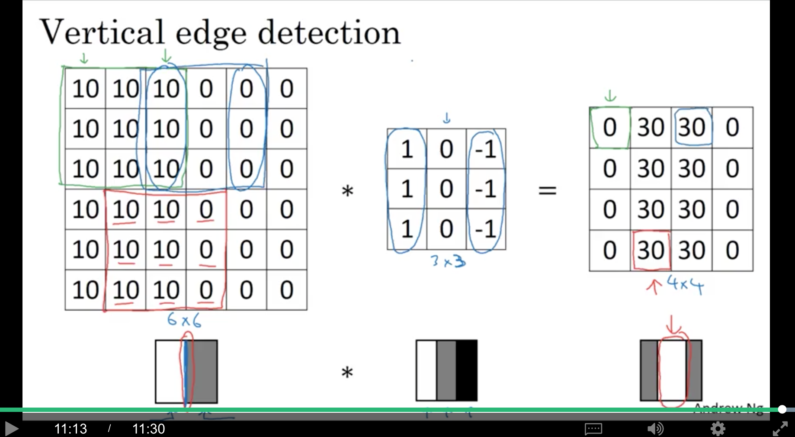
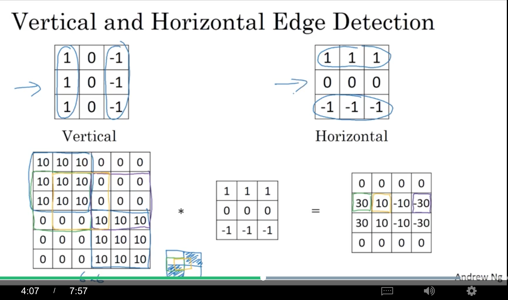
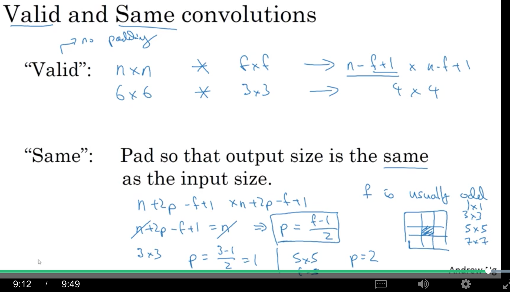
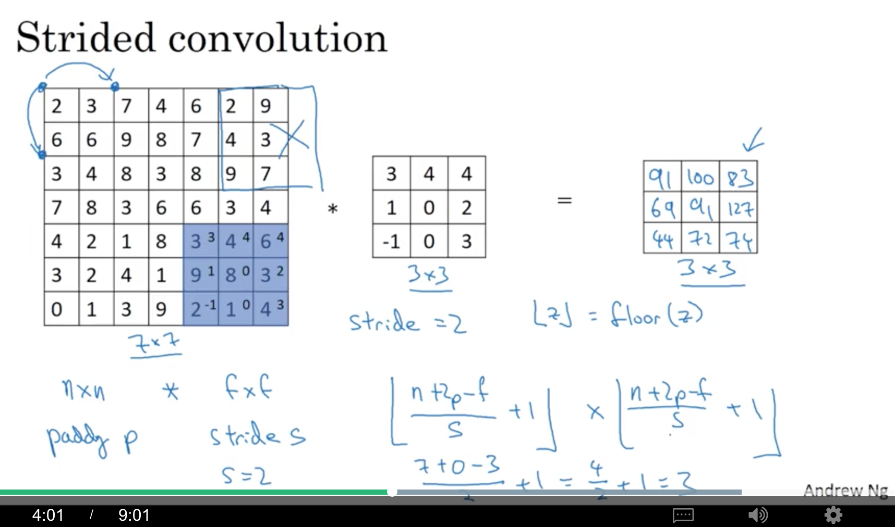
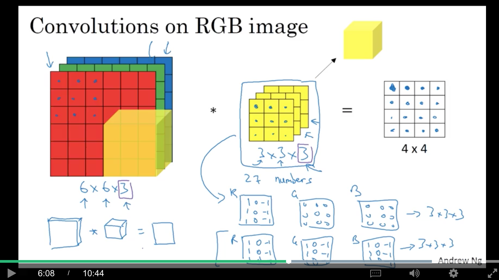
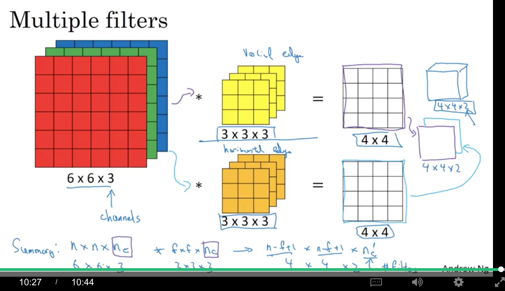
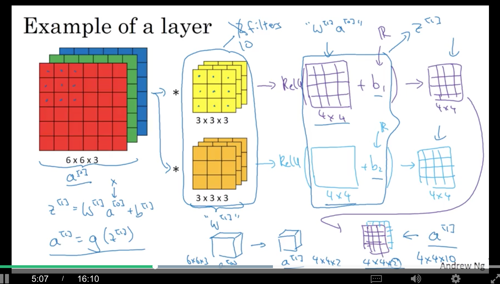
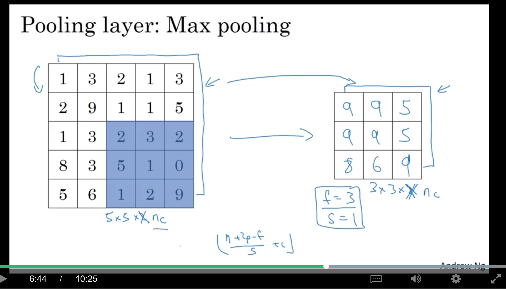
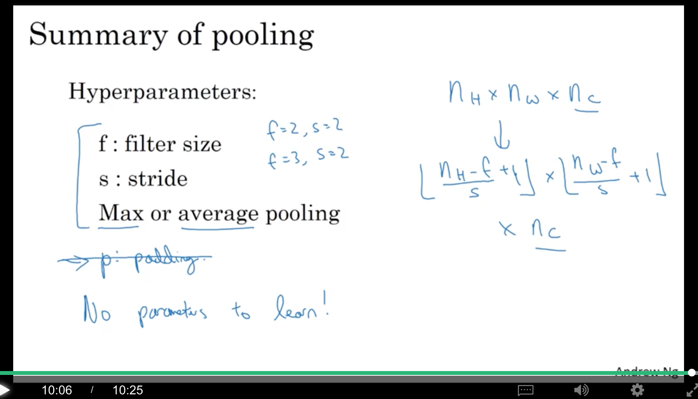
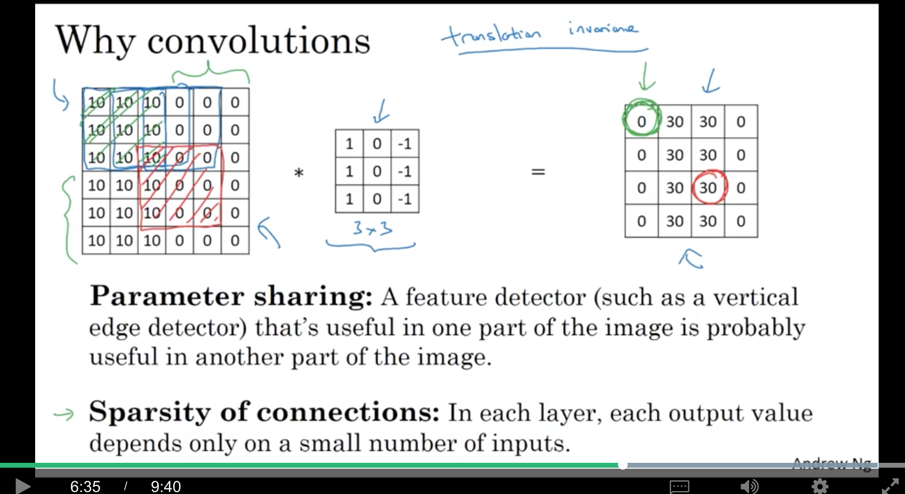

<!DOCTYPE html>
  <html>
    <head>
      <title>c4w1</title>
      <meta charset="utf-8">
      <meta name="viewport" content="width=device-width, initial-scale=1.0">
      
<link rel="stylesheet" href="https://cdn.jsdelivr.net/npm/katex@0.9.0/dist/katex.min.css" integrity="sha384-TEMocfGvRuD1rIAacqrknm5BQZ7W7uWitoih+jMNFXQIbNl16bO8OZmylH/Vi/Ei" crossorigin="anonymous">
      <link rel="stylesheet" href="https://cdn.jsdelivr.net/npm/katex@0.9.0/dist/katex.min.css" integrity="sha384-TEMocfGvRuD1rIAacqrknm5BQZ7W7uWitoih+jMNFXQIbNl16bO8OZmylH/Vi/Ei" crossorigin="anonymous">
      
      
      
      
      
      
      
      
      
      

      <style> 
      /**
 * prism.js Github theme based on GitHub's theme.
 * @author Sam Clarke
 */
code[class*="language-"],
pre[class*="language-"] {
  color: #333;
  background: none;
  font-family: Consolas, "Liberation Mono", Menlo, Courier, monospace;
  text-align: left;
  white-space: pre;
  word-spacing: normal;
  word-break: normal;
  word-wrap: normal;
  line-height: 1.4;

  -moz-tab-size: 8;
  -o-tab-size: 8;
  tab-size: 8;

  -webkit-hyphens: none;
  -moz-hyphens: none;
  -ms-hyphens: none;
  hyphens: none;
}

/* Code blocks */
pre[class*="language-"] {
  padding: .8em;
  overflow: auto;
  /* border: 1px solid #ddd; */
  border-radius: 3px;
  /* background: #fff; */
  background: #f5f5f5;
}

/* Inline code */
:not(pre) > code[class*="language-"] {
  padding: .1em;
  border-radius: .3em;
  white-space: normal;
  background: #f5f5f5;
}

.token.comment,
.token.blockquote {
  color: #969896;
}

.token.cdata {
  color: #183691;
}

.token.doctype,
.token.punctuation,
.token.variable,
.token.macro.property {
  color: #333;
}

.token.operator,
.token.important,
.token.keyword,
.token.rule,
.token.builtin {
  color: #a71d5d;
}

.token.string,
.token.url,
.token.regex,
.token.attr-value {
  color: #183691;
}

.token.property,
.token.number,
.token.boolean,
.token.entity,
.token.atrule,
.token.constant,
.token.symbol,
.token.command,
.token.code {
  color: #0086b3;
}

.token.tag,
.token.selector,
.token.prolog {
  color: #63a35c;
}

.token.function,
.token.namespace,
.token.pseudo-element,
.token.class,
.token.class-name,
.token.pseudo-class,
.token.id,
.token.url-reference .token.variable,
.token.attr-name {
  color: #795da3;
}

.token.entity {
  cursor: help;
}

.token.title,
.token.title .token.punctuation {
  font-weight: bold;
  color: #1d3e81;
}

.token.list {
  color: #ed6a43;
}

.token.inserted {
  background-color: #eaffea;
  color: #55a532;
}

.token.deleted {
  background-color: #ffecec;
  color: #bd2c00;
}

.token.bold {
  font-weight: bold;
}

.token.italic {
  font-style: italic;
}


/* JSON */
.language-json .token.property {
  color: #183691;
}

.language-markup .token.tag .token.punctuation {
  color: #333;
}

/* CSS */
code.language-css,
.language-css .token.function {
  color: #0086b3;
}

/* YAML */
.language-yaml .token.atrule {
  color: #63a35c;
}

code.language-yaml {
  color: #183691;
}

/* Ruby */
.language-ruby .token.function {
  color: #333;
}

/* Markdown */
.language-markdown .token.url {
  color: #795da3;
}

/* Makefile */
.language-makefile .token.symbol {
  color: #795da3;
}

.language-makefile .token.variable {
  color: #183691;
}

.language-makefile .token.builtin {
  color: #0086b3;
}

/* Bash */
.language-bash .token.keyword {
  color: #0086b3;
}html body{font-family:"Helvetica Neue",Helvetica,"Segoe UI",Arial,freesans,sans-serif;font-size:16px;line-height:1.6;color:#333;background-color:#fff;overflow:initial;box-sizing:border-box;word-wrap:break-word}html body>:first-child{margin-top:0}html body h1,html body h2,html body h3,html body h4,html body h5,html body h6{line-height:1.2;margin-top:1em;margin-bottom:16px;color:#000}html body h1{font-size:2.25em;font-weight:300;padding-bottom:.3em}html body h2{font-size:1.75em;font-weight:400;padding-bottom:.3em}html body h3{font-size:1.5em;font-weight:500}html body h4{font-size:1.25em;font-weight:600}html body h5{font-size:1.1em;font-weight:600}html body h6{font-size:1em;font-weight:600}html body h1,html body h2,html body h3,html body h4,html body h5{font-weight:600}html body h5{font-size:1em}html body h6{color:#5c5c5c}html body strong{color:#000}html body del{color:#5c5c5c}html body a:not([href]){color:inherit;text-decoration:none}html body a{color:#08c;text-decoration:none}html body a:hover{color:#00a3f5;text-decoration:none}html body img{max-width:100%}html body>p{margin-top:0;margin-bottom:16px;word-wrap:break-word}html body>ul,html body>ol{margin-bottom:16px}html body ul,html body ol{padding-left:2em}html body ul.no-list,html body ol.no-list{padding:0;list-style-type:none}html body ul ul,html body ul ol,html body ol ol,html body ol ul{margin-top:0;margin-bottom:0}html body li{margin-bottom:0}html body li.task-list-item{list-style:none}html body li>p{margin-top:0;margin-bottom:0}html body .task-list-item-checkbox{margin:0 .2em .25em -1.8em;vertical-align:middle}html body .task-list-item-checkbox:hover{cursor:pointer}html body blockquote{margin:16px 0;font-size:inherit;padding:0 15px;color:#5c5c5c;border-left:4px solid #d6d6d6}html body blockquote>:first-child{margin-top:0}html body blockquote>:last-child{margin-bottom:0}html body hr{height:4px;margin:32px 0;background-color:#d6d6d6;border:0 none}html body table{margin:10px 0 15px 0;border-collapse:collapse;border-spacing:0;display:block;width:100%;overflow:auto;word-break:normal;word-break:keep-all}html body table th{font-weight:bold;color:#000}html body table td,html body table th{border:1px solid #d6d6d6;padding:6px 13px}html body dl{padding:0}html body dl dt{padding:0;margin-top:16px;font-size:1em;font-style:italic;font-weight:bold}html body dl dd{padding:0 16px;margin-bottom:16px}html body code{font-family:Menlo,Monaco,Consolas,'Courier New',monospace;font-size:.85em !important;color:#000;background-color:#f0f0f0;border-radius:3px;padding:.2em 0}html body code::before,html body code::after{letter-spacing:-0.2em;content:"\00a0"}html body pre>code{padding:0;margin:0;font-size:.85em !important;word-break:normal;white-space:pre;background:transparent;border:0}html body .highlight{margin-bottom:16px}html body .highlight pre,html body pre{padding:1em;overflow:auto;font-size:.85em !important;line-height:1.45;border:#d6d6d6;border-radius:3px}html body .highlight pre{margin-bottom:0;word-break:normal}html body pre code,html body pre tt{display:inline;max-width:initial;padding:0;margin:0;overflow:initial;line-height:inherit;word-wrap:normal;background-color:transparent;border:0}html body pre code:before,html body pre tt:before,html body pre code:after,html body pre tt:after{content:normal}html body p,html body blockquote,html body ul,html body ol,html body dl,html body pre{margin-top:0;margin-bottom:16px}html body kbd{color:#000;border:1px solid #d6d6d6;border-bottom:2px solid #c7c7c7;padding:2px 4px;background-color:#f0f0f0;border-radius:3px}@media print{html body{background-color:#fff}html body h1,html body h2,html body h3,html body h4,html body h5,html body h6{color:#000;page-break-after:avoid}html body blockquote{color:#5c5c5c}html body pre{page-break-inside:avoid}html body table{display:table}html body img{display:block;max-width:100%;max-height:100%}html body pre,html body code{word-wrap:break-word;white-space:pre}}.markdown-preview{width:100%;height:100%;box-sizing:border-box}.markdown-preview .pagebreak,.markdown-preview .newpage{page-break-before:always}.markdown-preview pre.line-numbers{position:relative;padding-left:3.8em;counter-reset:linenumber}.markdown-preview pre.line-numbers>code{position:relative}.markdown-preview pre.line-numbers .line-numbers-rows{position:absolute;pointer-events:none;top:1em;font-size:100%;left:0;width:3em;letter-spacing:-1px;border-right:1px solid #999;-webkit-user-select:none;-moz-user-select:none;-ms-user-select:none;user-select:none}.markdown-preview pre.line-numbers .line-numbers-rows>span{pointer-events:none;display:block;counter-increment:linenumber}.markdown-preview pre.line-numbers .line-numbers-rows>span:before{content:counter(linenumber);color:#999;display:block;padding-right:.8em;text-align:right}.markdown-preview .mathjax-exps .MathJax_Display{text-align:center !important}.markdown-preview:not([for="preview"]) .code-chunk .btn-group{display:none}.markdown-preview:not([for="preview"]) .code-chunk .status{display:none}.markdown-preview:not([for="preview"]) .code-chunk .output-div{margin-bottom:16px}.scrollbar-style::-webkit-scrollbar{width:8px}.scrollbar-style::-webkit-scrollbar-track{border-radius:10px;background-color:transparent}.scrollbar-style::-webkit-scrollbar-thumb{border-radius:5px;background-color:rgba(150,150,150,0.66);border:4px solid rgba(150,150,150,0.66);background-clip:content-box}html body[for="html-export"]:not([data-presentation-mode]){position:relative;width:100%;height:100%;top:0;left:0;margin:0;padding:0;overflow:auto}html body[for="html-export"]:not([data-presentation-mode]) .markdown-preview{position:relative;top:0}@media screen and (min-width:914px){html body[for="html-export"]:not([data-presentation-mode]) .markdown-preview{padding:2em calc(50% - 457px)}}@media screen and (max-width:914px){html body[for="html-export"]:not([data-presentation-mode]) .markdown-preview{padding:2em}}@media screen and (max-width:450px){html body[for="html-export"]:not([data-presentation-mode]) .markdown-preview{font-size:14px !important;padding:1em}}@media print{html body[for="html-export"]:not([data-presentation-mode]) #sidebar-toc-btn{display:none}}html body[for="html-export"]:not([data-presentation-mode]) #sidebar-toc-btn{position:fixed;bottom:8px;left:8px;font-size:28px;cursor:pointer;color:inherit;z-index:99;width:32px;text-align:center;opacity:.4}html body[for="html-export"]:not([data-presentation-mode])[html-show-sidebar-toc] #sidebar-toc-btn{opacity:1}html body[for="html-export"]:not([data-presentation-mode])[html-show-sidebar-toc] .md-sidebar-toc{position:fixed;top:0;left:0;width:300px;height:100%;padding:32px 0 48px 0;font-size:14px;box-shadow:0 0 4px rgba(150,150,150,0.33);box-sizing:border-box;overflow:auto;background-color:inherit}html body[for="html-export"]:not([data-presentation-mode])[html-show-sidebar-toc] .md-sidebar-toc::-webkit-scrollbar{width:8px}html body[for="html-export"]:not([data-presentation-mode])[html-show-sidebar-toc] .md-sidebar-toc::-webkit-scrollbar-track{border-radius:10px;background-color:transparent}html body[for="html-export"]:not([data-presentation-mode])[html-show-sidebar-toc] .md-sidebar-toc::-webkit-scrollbar-thumb{border-radius:5px;background-color:rgba(150,150,150,0.66);border:4px solid rgba(150,150,150,0.66);background-clip:content-box}html body[for="html-export"]:not([data-presentation-mode])[html-show-sidebar-toc] .md-sidebar-toc a{text-decoration:none}html body[for="html-export"]:not([data-presentation-mode])[html-show-sidebar-toc] .md-sidebar-toc ul{padding:0 1.6em;margin-top:.8em}html body[for="html-export"]:not([data-presentation-mode])[html-show-sidebar-toc] .md-sidebar-toc li{margin-bottom:.8em}html body[for="html-export"]:not([data-presentation-mode])[html-show-sidebar-toc] .md-sidebar-toc ul{list-style-type:none}html body[for="html-export"]:not([data-presentation-mode])[html-show-sidebar-toc] .markdown-preview{left:300px;width:calc(100% -  300px);padding:2em calc(50% - 457px -  150px);margin:0;box-sizing:border-box}@media screen and (max-width:1274px){html body[for="html-export"]:not([data-presentation-mode])[html-show-sidebar-toc] .markdown-preview{padding:2em}}@media screen and (max-width:450px){html body[for="html-export"]:not([data-presentation-mode])[html-show-sidebar-toc] .markdown-preview{width:100%}}html body[for="html-export"]:not([data-presentation-mode]):not([html-show-sidebar-toc]) .markdown-preview{left:50%;transform:translateX(-50%)}html body[for="html-export"]:not([data-presentation-mode]):not([html-show-sidebar-toc]) .md-sidebar-toc{display:none}
/* Please visit the URL below for more information: */
/*   https://shd101wyy.github.io/markdown-preview-enhanced/#/customize-css */
 
      </style>
    </head>
    <body for="html-export">
      <div class="mume markdown-preview   ">
      <p>contents</p>
<ul>
<li><a href="#1-convolutional-neural-networks">1. Convolutional Neural Networks</a>
<ul>
<li><a href="#11-computer-vision">1.1 Computer Vision</a></li>
<li><a href="#12-edge-detection-example">1.2 Edge Detection Example</a></li>
<li><a href="#13-more-edge-detection">1.3 More Edge Detection</a></li>
<li><a href="#14-padding">1.4 Padding</a></li>
<li><a href="#15-strided-convolutions">1.5 Strided Convolutions</a></li>
<li><a href="#16-convolutions-over-volume">1.6 Convolutions Over Volume</a></li>
<li><a href="#17-one-layer-of-convolutional-network">1.7 One Layer of Convolutional Network</a></li>
<li><a href="#18-simple-neural-network-example">1.8 Simple Neural Network Example</a></li>
<li><a href="#19-pooling-layers">1.9 Pooling Layers</a></li>
<li><a href="#110-cnn-example">1.10 CNN Example</a></li>
<li><a href="#111-why-convolutions">1.11 Why Convolutions?</a></li>
</ul>
</li>
</ul>
<h1 class="mume-header" id="1-convolutional-neural-networks">1. Convolutional Neural Networks</h1>

<h2 class="mume-header" id="11-computer-vision">1.1 Computer Vision</h2>

<p>dl对cv的影响：</p>
<ul>
<li>能够催生cv领域中很多新产品和应用</li>
<li>cv的很多思想对其他领域也很有借鉴作用，例如语音识别等</li>
</ul>
<p>cv problems；</p>
<ul>
<li>image classification</li>
<li>object detection</li>
<li>neural style transfer</li>
</ul>
<p>deep learning on large images:</p>
<ul>
<li>如果输入是64x64的图像，那么由于有3个通道，所以是64x64x3=12288维</li>
<li>如果输入是1000x1000的图像，就有300w维，如果第一层有1000个隐层单元，那么如果是全连接，<span class="katex"><span class="katex-mathml"><math><semantics><mrow><msup><mi>W</mi><mrow><mo>[</mo><mn>1</mn><mo>]</mo></mrow></msup></mrow><annotation encoding="application/x-tex">W^{[1]}</annotation></semantics></math></span><span class="katex-html" aria-hidden="true"><span class="strut" style="height:0.8879999999999999em;"></span><span class="strut bottom" style="height:0.8879999999999999em;vertical-align:0em;"></span><span class="base"><span class="mord"><span class="mord mathit" style="margin-right:0.13889em;">W</span><span class="msupsub"><span class="vlist-t"><span class="vlist-r"><span class="vlist" style="height:0.8879999999999999em;"><span style="top:-3.063em;margin-right:0.05em;"><span class="pstrut" style="height:2.7em;"></span><span class="sizing reset-size6 size3 mtight"><span class="mord mtight"><span class="mopen mtight">[</span><span class="mord mtight">1</span><span class="mclose mtight">]</span></span></span></span></span></span></span></span></span></span></span></span>就是一个(1000, 300w)，所以有3000m=3billion的参数，一方面难以获得足够的数据来防止过拟合，另一方面对计算量和内存的需求是很大的。因此，需要卷积。</li>
</ul>
<h2 class="mume-header" id="12-edge-detection-example">1.2 Edge Detection Example</h2>

<p>例如，我们希望有两个detector，一个可以检测垂直方向的边缘，一个可以检测水平方向的边缘。</p>
<p>vertical edge detection:</p>
<ul>
<li>输入一张6x6的灰度图(所以没有3通道，只有1通道)，数字越小，越明亮（白）</li>
<li>可以定义一个3x3的filter（又称kernel），</li>
<li>然后两者之前进行卷积运算，得到的结果是一个4x4的矩阵。计算过程如下：
<ul>
<li>4x4的左上角的元素是将filter『粘贴』到原始图片的左上角，然后对应元素相乘，再把所有相乘的结果相加起来</li>
<li>其他元素就是将filter不断地shift，然后进行卷积，得到对应的结果，以此类推。</li>
</ul>
</li>
</ul>
<p></p>
<p>卷积的实现：</p>
<ul>
<li>python: conv_forward</li>
<li>tensorflow: tf.nn.conv2d</li>
<li>keras: Conv2D</li>
</ul>
<p>从下图可以看到，这个filter可以学习到原始图像中明暗分界的那条垂直竖线(对中间那个垂直区域的『激活』值比较高)。可见，这个filter（左边亮，右边暗）可以检测从明到暗的transition。</p>
<p></p>
<h2 class="mume-header" id="13-more-edge-detection">1.3 More Edge Detection</h2>

<p>如果输入图像左右颠倒，使用同一个filter，可以发现卷积结果仍然可以检测这条明暗交界线，只是这次变成了从暗到明的transition，而结果的中间垂直区域变成黑色的。</p>
<p></p>
<p>类似地，如果要检测水平边缘，可以用如下filter，第一行亮，第三行暗。</p>
<p></p>
<ul>
<li>sobel filter：就是把垂直filter的第二行乘了2，会稍微robust一点</li>
<li>scharr filter：把垂直filter第一行和第三行分别乘3，第二行乘10</li>
</ul>
<p>在dl中，这个3x3的filter的9个元素，不需要手动设置，当做模型的参数，通过bp来学习，这样，这些filter就可以用来检测各种角度的边缘。</p>
<p></p>
<h2 class="mume-header" id="14-padding">1.4 Padding</h2>

<p>正常的卷积操作，输入图片是<span class="katex"><span class="katex-mathml"><math><semantics><mrow><mi>n</mi><mo>×</mo><mi>n</mi></mrow><annotation encoding="application/x-tex">n\times n</annotation></semantics></math></span><span class="katex-html" aria-hidden="true"><span class="strut" style="height:0.58333em;"></span><span class="strut bottom" style="height:0.66666em;vertical-align:-0.08333em;"></span><span class="base"><span class="mord mathit">n</span><span class="mord rule" style="margin-right:0.2222222222222222em;"></span><span class="mbin">×</span><span class="mord rule" style="margin-right:0.2222222222222222em;"></span><span class="mord mathit">n</span></span></span></span>，filter是<span class="katex"><span class="katex-mathml"><math><semantics><mrow><mi>f</mi><mo>×</mo><mi>f</mi></mrow><annotation encoding="application/x-tex">f\times f</annotation></semantics></math></span><span class="katex-html" aria-hidden="true"><span class="strut" style="height:0.69444em;"></span><span class="strut bottom" style="height:0.8888799999999999em;vertical-align:-0.19444em;"></span><span class="base"><span class="mord mathit" style="margin-right:0.10764em;">f</span><span class="mord rule" style="margin-right:0.2222222222222222em;"></span><span class="mbin">×</span><span class="mord rule" style="margin-right:0.2222222222222222em;"></span><span class="mord mathit" style="margin-right:0.10764em;">f</span></span></span></span>，得到的卷积结果是<span class="katex"><span class="katex-mathml"><math><semantics><mrow><mo>(</mo><mi>n</mi><mo>−</mo><mi>f</mi><mo>+</mo><mn>1</mn><mo>)</mo><mo>×</mo><mo>(</mo><mi>n</mi><mo>−</mo><mi>f</mi><mo>+</mo><mn>1</mn><mo>)</mo></mrow><annotation encoding="application/x-tex">(n-f+1)\times (n-f+1)</annotation></semantics></math></span><span class="katex-html" aria-hidden="true"><span class="strut" style="height:0.75em;"></span><span class="strut bottom" style="height:1em;vertical-align:-0.25em;"></span><span class="base"><span class="mopen">(</span><span class="mord mathit">n</span><span class="mord rule" style="margin-right:0.2222222222222222em;"></span><span class="mbin">−</span><span class="mord rule" style="margin-right:0.2222222222222222em;"></span><span class="mord mathit" style="margin-right:0.10764em;">f</span><span class="mord rule" style="margin-right:0.2222222222222222em;"></span><span class="mbin">+</span><span class="mord rule" style="margin-right:0.2222222222222222em;"></span><span class="mord">1</span><span class="mclose">)</span><span class="mord rule" style="margin-right:0.2222222222222222em;"></span><span class="mbin">×</span><span class="mord rule" style="margin-right:0.2222222222222222em;"></span><span class="mopen">(</span><span class="mord mathit">n</span><span class="mord rule" style="margin-right:0.2222222222222222em;"></span><span class="mbin">−</span><span class="mord rule" style="margin-right:0.2222222222222222em;"></span><span class="mord mathit" style="margin-right:0.10764em;">f</span><span class="mord rule" style="margin-right:0.2222222222222222em;"></span><span class="mbin">+</span><span class="mord rule" style="margin-right:0.2222222222222222em;"></span><span class="mord">1</span><span class="mclose">)</span></span></span></span>，有以下两个缺点：</p>
<ul>
<li><strong>shrinking output</strong>: <strong>卷积的结果比原图像小</strong>，所以只能做比较少次的卷积，不然<strong>图片会越变越小</strong>，最后变成<span class="katex"><span class="katex-mathml"><math><semantics><mrow><mn>1</mn><mo>×</mo><mn>1</mn></mrow><annotation encoding="application/x-tex">1\times1</annotation></semantics></math></span><span class="katex-html" aria-hidden="true"><span class="strut" style="height:0.64444em;"></span><span class="strut bottom" style="height:0.72777em;vertical-align:-0.08333em;"></span><span class="base"><span class="mord">1</span><span class="mord rule" style="margin-right:0.2222222222222222em;"></span><span class="mbin">×</span><span class="mord rule" style="margin-right:0.2222222222222222em;"></span><span class="mord">1</span></span></span></span></li>
<li><strong>throwing away info from edges</strong>: 看左上角的元素，其实只被使用了一次；而中间的元素则会被使用很多次。<strong>所以角落或者边缘附近的元素被使用的次数比中间元素少得多，因此，图片边缘的很多信息其实没有被充分利用。</strong></li>
</ul>
<p>padding就是在整幅图像的边缘，加上一个宽度为<span class="katex"><span class="katex-mathml"><math><semantics><mrow><mi>p</mi></mrow><annotation encoding="application/x-tex">p</annotation></semantics></math></span><span class="katex-html" aria-hidden="true"><span class="strut" style="height:0.43056em;"></span><span class="strut bottom" style="height:0.625em;vertical-align:-0.19444em;"></span><span class="base"><span class="mord mathit">p</span></span></span></span>（这个例子中<span class="katex"><span class="katex-mathml"><math><semantics><mrow><mi>p</mi><mo>=</mo><mn>1</mn></mrow><annotation encoding="application/x-tex">p=1</annotation></semantics></math></span><span class="katex-html" aria-hidden="true"><span class="strut" style="height:0.64444em;"></span><span class="strut bottom" style="height:0.8388800000000001em;vertical-align:-0.19444em;"></span><span class="base"><span class="mord mathit">p</span><span class="mord rule" style="margin-right:0.2777777777777778em;"></span><span class="mrel">=</span><span class="mord rule" style="margin-right:0.2777777777777778em;"></span><span class="mord">1</span></span></span></span>）的border(可以都填充上0)，例如，6x6就变成了8x8，即<span class="katex"><span class="katex-mathml"><math><semantics><mrow><mo>(</mo><mi>n</mi><mo>+</mo><mn>2</mn><mo>)</mo><mo>×</mo><mo>(</mo><mi>n</mi><mo>+</mo><mn>2</mn><mo>)</mo></mrow><annotation encoding="application/x-tex">(n+2)\times (n+2)</annotation></semantics></math></span><span class="katex-html" aria-hidden="true"><span class="strut" style="height:0.75em;"></span><span class="strut bottom" style="height:1em;vertical-align:-0.25em;"></span><span class="base"><span class="mopen">(</span><span class="mord mathit">n</span><span class="mord rule" style="margin-right:0.2222222222222222em;"></span><span class="mbin">+</span><span class="mord rule" style="margin-right:0.2222222222222222em;"></span><span class="mord">2</span><span class="mclose">)</span><span class="mord rule" style="margin-right:0.2222222222222222em;"></span><span class="mbin">×</span><span class="mord rule" style="margin-right:0.2222222222222222em;"></span><span class="mopen">(</span><span class="mord mathit">n</span><span class="mord rule" style="margin-right:0.2222222222222222em;"></span><span class="mbin">+</span><span class="mord rule" style="margin-right:0.2222222222222222em;"></span><span class="mord">2</span><span class="mclose">)</span></span></span></span>，那么与一个3x3的filter做卷积，就得到一个6x6，即<span class="katex"><span class="katex-mathml"><math><semantics><mrow><mo>(</mo><mi>n</mi><mo>+</mo><mn>2</mn><mo>−</mo><mn>3</mn><mo>+</mo><mn>1</mn><mo>)</mo><mo>×</mo><mo>(</mo><mi>n</mi><mo>+</mo><mn>2</mn><mo>−</mo><mn>3</mn><mo>+</mo><mn>1</mn><mo>)</mo></mrow><annotation encoding="application/x-tex">(n+2-3+1)\times (n+2-3+1)</annotation></semantics></math></span><span class="katex-html" aria-hidden="true"><span class="strut" style="height:0.75em;"></span><span class="strut bottom" style="height:1em;vertical-align:-0.25em;"></span><span class="base"><span class="mopen">(</span><span class="mord mathit">n</span><span class="mord rule" style="margin-right:0.2222222222222222em;"></span><span class="mbin">+</span><span class="mord rule" style="margin-right:0.2222222222222222em;"></span><span class="mord">2</span><span class="mord rule" style="margin-right:0.2222222222222222em;"></span><span class="mbin">−</span><span class="mord rule" style="margin-right:0.2222222222222222em;"></span><span class="mord">3</span><span class="mord rule" style="margin-right:0.2222222222222222em;"></span><span class="mbin">+</span><span class="mord rule" style="margin-right:0.2222222222222222em;"></span><span class="mord">1</span><span class="mclose">)</span><span class="mord rule" style="margin-right:0.2222222222222222em;"></span><span class="mbin">×</span><span class="mord rule" style="margin-right:0.2222222222222222em;"></span><span class="mopen">(</span><span class="mord mathit">n</span><span class="mord rule" style="margin-right:0.2222222222222222em;"></span><span class="mbin">+</span><span class="mord rule" style="margin-right:0.2222222222222222em;"></span><span class="mord">2</span><span class="mord rule" style="margin-right:0.2222222222222222em;"></span><span class="mbin">−</span><span class="mord rule" style="margin-right:0.2222222222222222em;"></span><span class="mord">3</span><span class="mord rule" style="margin-right:0.2222222222222222em;"></span><span class="mbin">+</span><span class="mord rule" style="margin-right:0.2222222222222222em;"></span><span class="mord">1</span><span class="mclose">)</span></span></span></span>的结果。</p>
<p>假设padding size是<span class="katex"><span class="katex-mathml"><math><semantics><mrow><mi>p</mi></mrow><annotation encoding="application/x-tex">p</annotation></semantics></math></span><span class="katex-html" aria-hidden="true"><span class="strut" style="height:0.43056em;"></span><span class="strut bottom" style="height:0.625em;vertical-align:-0.19444em;"></span><span class="base"><span class="mord mathit">p</span></span></span></span>，那么，得到的卷积结果是<span class="katex"><span class="katex-mathml"><math><semantics><mrow><mo>(</mo><mi>n</mi><mo>+</mo><mn>2</mn><mi>p</mi><mo>−</mo><mi>f</mi><mo>+</mo><mn>1</mn><mo>)</mo><mo>×</mo><mo>(</mo><mi>n</mi><mo>+</mo><mn>2</mn><mi>p</mi><mo>−</mo><mi>f</mi><mo>+</mo><mn>1</mn><mo>)</mo></mrow><annotation encoding="application/x-tex">(n+2p-f+1)\times (n+2p-f+1)</annotation></semantics></math></span><span class="katex-html" aria-hidden="true"><span class="strut" style="height:0.75em;"></span><span class="strut bottom" style="height:1em;vertical-align:-0.25em;"></span><span class="base"><span class="mopen">(</span><span class="mord mathit">n</span><span class="mord rule" style="margin-right:0.2222222222222222em;"></span><span class="mbin">+</span><span class="mord rule" style="margin-right:0.2222222222222222em;"></span><span class="mord">2</span><span class="mord mathit">p</span><span class="mord rule" style="margin-right:0.2222222222222222em;"></span><span class="mbin">−</span><span class="mord rule" style="margin-right:0.2222222222222222em;"></span><span class="mord mathit" style="margin-right:0.10764em;">f</span><span class="mord rule" style="margin-right:0.2222222222222222em;"></span><span class="mbin">+</span><span class="mord rule" style="margin-right:0.2222222222222222em;"></span><span class="mord">1</span><span class="mclose">)</span><span class="mord rule" style="margin-right:0.2222222222222222em;"></span><span class="mbin">×</span><span class="mord rule" style="margin-right:0.2222222222222222em;"></span><span class="mopen">(</span><span class="mord mathit">n</span><span class="mord rule" style="margin-right:0.2222222222222222em;"></span><span class="mbin">+</span><span class="mord rule" style="margin-right:0.2222222222222222em;"></span><span class="mord">2</span><span class="mord mathit">p</span><span class="mord rule" style="margin-right:0.2222222222222222em;"></span><span class="mbin">−</span><span class="mord rule" style="margin-right:0.2222222222222222em;"></span><span class="mord mathit" style="margin-right:0.10764em;">f</span><span class="mord rule" style="margin-right:0.2222222222222222em;"></span><span class="mbin">+</span><span class="mord rule" style="margin-right:0.2222222222222222em;"></span><span class="mord">1</span><span class="mclose">)</span></span></span></span></p>
<p></p>
<p>总结一下，两种卷积：</p>
<ul>
<li>valid convolutioins: no padding</li>
<li>same convolutions: padding使得output和input的size一样<br>
<span class="katex-display"><span class="katex"><span class="katex-mathml"><math><semantics><mrow><mi>n</mi><mo>+</mo><mn>2</mn><mi>p</mi><mo>−</mo><mi>f</mi><mo>+</mo><mn>1</mn><mo>=</mo><mi>n</mi><mo>=</mo><mo>&gt;</mo><mi>p</mi><mo>=</mo><mfrac><mrow><mi>f</mi><mo>−</mo><mn>1</mn></mrow><mrow><mn>2</mn></mrow></mfrac></mrow><annotation encoding="application/x-tex">n+2p-f+1=n=&gt;p=\frac{f-1}{2}</annotation></semantics></math></span><span class="katex-html" aria-hidden="true"><span class="strut" style="height:1.37144em;"></span><span class="strut bottom" style="height:2.05744em;vertical-align:-0.686em;"></span><span class="base"><span class="mord mathit">n</span><span class="mord rule" style="margin-right:0.2222222222222222em;"></span><span class="mbin">+</span><span class="mord rule" style="margin-right:0.2222222222222222em;"></span><span class="mord">2</span><span class="mord mathit">p</span><span class="mord rule" style="margin-right:0.2222222222222222em;"></span><span class="mbin">−</span><span class="mord rule" style="margin-right:0.2222222222222222em;"></span><span class="mord mathit" style="margin-right:0.10764em;">f</span><span class="mord rule" style="margin-right:0.2222222222222222em;"></span><span class="mbin">+</span><span class="mord rule" style="margin-right:0.2222222222222222em;"></span><span class="mord">1</span><span class="mord rule" style="margin-right:0.2777777777777778em;"></span><span class="mrel">=</span><span class="mord rule" style="margin-right:0.2777777777777778em;"></span><span class="mord mathit">n</span><span class="mord rule" style="margin-right:0.2777777777777778em;"></span><span class="mrel">=</span><span class="mrel">&gt;</span><span class="mord rule" style="margin-right:0.2777777777777778em;"></span><span class="mord mathit">p</span><span class="mord rule" style="margin-right:0.2777777777777778em;"></span><span class="mrel">=</span><span class="mord rule" style="margin-right:0.2777777777777778em;"></span><span class="mord"><span class="mopen nulldelimiter"></span><span class="mfrac"><span class="vlist-t vlist-t2"><span class="vlist-r"><span class="vlist" style="height:1.37144em;"><span style="top:-2.314em;"><span class="pstrut" style="height:3em;"></span><span class="mord"><span class="mord">2</span></span></span><span style="top:-3.15em;"><span class="pstrut" style="height:3em;"></span><span class="stretchy" style="height:0.2em;"><svg width="400em" height="0.2em" viewBox="0 0 400000 200" preserveAspectRatio="xMinYMin slice"><path d="M0 80H400000 v40H0z M0 80H400000 v40H0z"></path></svg></span></span><span style="top:-3.6770000000000005em;"><span class="pstrut" style="height:3em;"></span><span class="mord"><span class="mord mathit" style="margin-right:0.10764em;">f</span><span class="mord rule" style="margin-right:0.2222222222222222em;"></span><span class="mbin">−</span><span class="mord rule" style="margin-right:0.2222222222222222em;"></span><span class="mord">1</span></span></span></span><span class="vlist-s">​</span></span><span class="vlist-r"><span class="vlist" style="height:0.686em;"></span></span></span></span><span class="mclose nulldelimiter"></span></span></span></span></span></span></li>
</ul>
<p>在cv的传统中，<span class="katex"><span class="katex-mathml"><math><semantics><mrow><mi>f</mi></mrow><annotation encoding="application/x-tex">f</annotation></semantics></math></span><span class="katex-html" aria-hidden="true"><span class="strut" style="height:0.69444em;"></span><span class="strut bottom" style="height:0.8888799999999999em;vertical-align:-0.19444em;"></span><span class="base"><span class="mord mathit" style="margin-right:0.10764em;">f</span></span></span></span>一般都是奇数，原因如下：</p>
<ul>
<li>如果是偶数，就会出现不对称的padding</li>
<li>使用奇数<span class="katex"><span class="katex-mathml"><math><semantics><mrow><mi>f</mi></mrow><annotation encoding="application/x-tex">f</annotation></semantics></math></span><span class="katex-html" aria-hidden="true"><span class="strut" style="height:0.69444em;"></span><span class="strut bottom" style="height:0.8888799999999999em;vertical-align:-0.19444em;"></span><span class="base"><span class="mord mathit" style="margin-right:0.10764em;">f</span></span></span></span>的filter话，这样的filter会<strong>有一个中心点</strong>，在cv中，有一个特殊点是很好的，可以描述一个filter的位置</li>
</ul>
<p></p>
<h2 class="mume-header" id="15-strided-convolutions">1.5 Strided Convolutions</h2>

<p>stride=2意味着，算完一个后，要算下一个的时候，往右不只shift一个像素，而是shift stride个像素。纵向shift的时候也一样，一次shift stride个像素。</p>
<p>所以，对于padding是<span class="katex"><span class="katex-mathml"><math><semantics><mrow><mi>p</mi></mrow><annotation encoding="application/x-tex">p</annotation></semantics></math></span><span class="katex-html" aria-hidden="true"><span class="strut" style="height:0.43056em;"></span><span class="strut bottom" style="height:0.625em;vertical-align:-0.19444em;"></span><span class="base"><span class="mord mathit">p</span></span></span></span>，而stride是<span class="katex"><span class="katex-mathml"><math><semantics><mrow><mi>s</mi></mrow><annotation encoding="application/x-tex">s</annotation></semantics></math></span><span class="katex-html" aria-hidden="true"><span class="strut" style="height:0.43056em;"></span><span class="strut bottom" style="height:0.43056em;vertical-align:0em;"></span><span class="base"><span class="mord mathit">s</span></span></span></span>的卷积，得到的output大小是<span class="katex"><span class="katex-mathml"><math><semantics><mrow><mo>(</mo><mfrac><mrow><mi>n</mi><mo>+</mo><mn>2</mn><mi>p</mi><mo>−</mo><mi>f</mi></mrow><mrow><mi>s</mi></mrow></mfrac><mo>+</mo><mn>1</mn><mo>)</mo><mo>(</mo><mfrac><mrow><mi>n</mi><mo>+</mo><mn>2</mn><mi>p</mi><mo>−</mo><mi>f</mi></mrow><mrow><mi>s</mi></mrow></mfrac><mo>+</mo><mn>1</mn><mo>)</mo></mrow><annotation encoding="application/x-tex">(\frac{n+2p-f}{s}+1)(\frac{n+2p-f}{s}+1)</annotation></semantics></math></span><span class="katex-html" aria-hidden="true"><span class="strut" style="height:0.9322159999999999em;"></span><span class="strut bottom" style="height:1.277216em;vertical-align:-0.345em;"></span><span class="base"><span class="mopen">(</span><span class="mord"><span class="mopen nulldelimiter"></span><span class="mfrac"><span class="vlist-t vlist-t2"><span class="vlist-r"><span class="vlist" style="height:0.9322159999999999em;"><span style="top:-2.6550000000000002em;"><span class="pstrut" style="height:3em;"></span><span class="sizing reset-size6 size3 mtight"><span class="mord mtight"><span class="mord mathit mtight">s</span></span></span></span><span style="top:-3.15em;"><span class="pstrut" style="height:3em;"></span><span class="stretchy" style="height:0.2em;"><svg width="400em" height="0.2em" viewBox="0 0 400000 200" preserveAspectRatio="xMinYMin slice"><path d="M0 80H400000 v40H0z M0 80H400000 v40H0z"></path></svg></span></span><span style="top:-3.446108em;"><span class="pstrut" style="height:3em;"></span><span class="sizing reset-size6 size3 mtight"><span class="mord mtight"><span class="mord mathit mtight">n</span><span class="mbin mtight">+</span><span class="mord mtight">2</span><span class="mord mathit mtight">p</span><span class="mbin mtight">−</span><span class="mord mathit mtight" style="margin-right:0.10764em;">f</span></span></span></span></span><span class="vlist-s">​</span></span><span class="vlist-r"><span class="vlist" style="height:0.345em;"></span></span></span></span><span class="mclose nulldelimiter"></span></span><span class="mord rule" style="margin-right:0.2222222222222222em;"></span><span class="mbin">+</span><span class="mord rule" style="margin-right:0.2222222222222222em;"></span><span class="mord">1</span><span class="mclose">)</span><span class="mopen">(</span><span class="mord"><span class="mopen nulldelimiter"></span><span class="mfrac"><span class="vlist-t vlist-t2"><span class="vlist-r"><span class="vlist" style="height:0.9322159999999999em;"><span style="top:-2.6550000000000002em;"><span class="pstrut" style="height:3em;"></span><span class="sizing reset-size6 size3 mtight"><span class="mord mtight"><span class="mord mathit mtight">s</span></span></span></span><span style="top:-3.15em;"><span class="pstrut" style="height:3em;"></span><span class="stretchy" style="height:0.2em;"><svg width="400em" height="0.2em" viewBox="0 0 400000 200" preserveAspectRatio="xMinYMin slice"><path d="M0 80H400000 v40H0z M0 80H400000 v40H0z"></path></svg></span></span><span style="top:-3.446108em;"><span class="pstrut" style="height:3em;"></span><span class="sizing reset-size6 size3 mtight"><span class="mord mtight"><span class="mord mathit mtight">n</span><span class="mbin mtight">+</span><span class="mord mtight">2</span><span class="mord mathit mtight">p</span><span class="mbin mtight">−</span><span class="mord mathit mtight" style="margin-right:0.10764em;">f</span></span></span></span></span><span class="vlist-s">​</span></span><span class="vlist-r"><span class="vlist" style="height:0.345em;"></span></span></span></span><span class="mclose nulldelimiter"></span></span><span class="mord rule" style="margin-right:0.2222222222222222em;"></span><span class="mbin">+</span><span class="mord rule" style="margin-right:0.2222222222222222em;"></span><span class="mord">1</span><span class="mclose">)</span></span></span></span>，<strong>如果这个结果不是一个整数，那么就取floor(向下取整)</strong>。【因为要保证参与计算卷积的都是图像的一部分，或者是padding的一部分，如图右上角超出的部分就不应该参与计算，所以这里要取floor】</p>
<p></p>
<p>在标准的信号处理/数学课本中，在进行卷积的element-wise乘法之前，需要将filter沿水平和垂直方向旋转（如图）。这样，可以使卷积操作满足结合律，即<span class="katex"><span class="katex-mathml"><math><semantics><mrow><mo>(</mo><mi>A</mi><mo>∗</mo><mi>B</mi><mo>)</mo><mo>∗</mo><mi>C</mi><mo>=</mo><mi>A</mi><mo>∗</mo><mo>(</mo><mi>B</mi><mo>∗</mo><mi>C</mi><mo>)</mo></mrow><annotation encoding="application/x-tex">(A*B)*C=A*(B*C)</annotation></semantics></math></span><span class="katex-html" aria-hidden="true"><span class="strut" style="height:0.75em;"></span><span class="strut bottom" style="height:1em;vertical-align:-0.25em;"></span><span class="base"><span class="mopen">(</span><span class="mord mathit">A</span><span class="mord rule" style="margin-right:0.2222222222222222em;"></span><span class="mbin">∗</span><span class="mord rule" style="margin-right:0.2222222222222222em;"></span><span class="mord mathit" style="margin-right:0.05017em;">B</span><span class="mclose">)</span><span class="mord rule" style="margin-right:0.2222222222222222em;"></span><span class="mbin">∗</span><span class="mord rule" style="margin-right:0.2222222222222222em;"></span><span class="mord mathit" style="margin-right:0.07153em;">C</span><span class="mord rule" style="margin-right:0.2777777777777778em;"></span><span class="mrel">=</span><span class="mord rule" style="margin-right:0.2777777777777778em;"></span><span class="mord mathit">A</span><span class="mord rule" style="margin-right:0.2222222222222222em;"></span><span class="mbin">∗</span><span class="mord rule" style="margin-right:0.2222222222222222em;"></span><span class="mopen">(</span><span class="mord mathit" style="margin-right:0.05017em;">B</span><span class="mord rule" style="margin-right:0.2222222222222222em;"></span><span class="mbin">∗</span><span class="mord rule" style="margin-right:0.2222222222222222em;"></span><span class="mord mathit" style="margin-right:0.07153em;">C</span><span class="mclose">)</span></span></span></span>，这对信号处理很有用，但对深度学习其实并不重要。</p>
<p>所以，严格意义上说，前面讲到的『卷积』，应该叫做『交叉相关（cross-correlation）』。而在大多数ml相关的文献中，都叫做卷积。</p>
<h2 class="mume-header" id="16-convolutions-over-volume">1.6 Convolutions Over Volume</h2>

<p>对于rgb图像而言，有3个channel，所以，相应的，filter也堆叠了3层。</p>
<p>注意:</p>
<ul>
<li>输入图片的shape是(height, width, num of channels)，</li>
<li>filter的shape是(height_f, width_f, num of channels)，<strong>filter和输入的第三维必须相等。</strong></li>
<li>输出的图片是(height_o, width_o)，<strong>注意，并没有第三维！！</strong></li>
</ul>
<p>卷积操作就是，将这个三维的filter（例如3x3x3）<strong>与输入图像的对应位置相乘，再将这27个数相加</strong>，得到的结果就是output的一个元素。</p>
<p>如果只想检测某一个channel的边缘，可以把另外几个channel的filter全部变成0；如果想检测多个channel，就正常搞。</p>
<p></p>
<p>如果有多个filter，那output就可以有第三维了，例如，有两个3x3x3的filter，那么可以把这两个output堆叠起来，这样output的第三维就是2啦。</p>
<p>总结：</p>
<p>输入是<span class="katex"><span class="katex-mathml"><math><semantics><mrow><mi>n</mi><mo>×</mo><mi>n</mi><mo>×</mo><msub><mi>n</mi><mi>C</mi></msub></mrow><annotation encoding="application/x-tex">n\times n\times n_{C}</annotation></semantics></math></span><span class="katex-html" aria-hidden="true"><span class="strut" style="height:0.58333em;"></span><span class="strut bottom" style="height:0.73333em;vertical-align:-0.15em;"></span><span class="base"><span class="mord mathit">n</span><span class="mord rule" style="margin-right:0.2222222222222222em;"></span><span class="mbin">×</span><span class="mord rule" style="margin-right:0.2222222222222222em;"></span><span class="mord mathit">n</span><span class="mord rule" style="margin-right:0.2222222222222222em;"></span><span class="mbin">×</span><span class="mord rule" style="margin-right:0.2222222222222222em;"></span><span class="mord"><span class="mord mathit">n</span><span class="msupsub"><span class="vlist-t vlist-t2"><span class="vlist-r"><span class="vlist" style="height:0.32833099999999993em;"><span style="top:-2.5500000000000003em;margin-left:0em;margin-right:0.05em;"><span class="pstrut" style="height:2.7em;"></span><span class="sizing reset-size6 size3 mtight"><span class="mord mtight"><span class="mord mathit mtight" style="margin-right:0.07153em;">C</span></span></span></span></span><span class="vlist-s">​</span></span><span class="vlist-r"><span class="vlist" style="height:0.15em;"></span></span></span></span></span></span></span></span>，有<span class="katex"><span class="katex-mathml"><math><semantics><mrow><msubsup><mi>n</mi><mi>C</mi><mo mathvariant="normal">′</mo></msubsup></mrow><annotation encoding="application/x-tex">n&#x27;_{C}</annotation></semantics></math></span><span class="katex-html" aria-hidden="true"><span class="strut" style="height:0.751892em;"></span><span class="strut bottom" style="height:1.027223em;vertical-align:-0.275331em;"></span><span class="base"><span class="mord"><span class="mord mathit">n</span><span class="msupsub"><span class="vlist-t vlist-t2"><span class="vlist-r"><span class="vlist" style="height:0.751892em;"><span style="top:-2.424669em;margin-left:0em;margin-right:0.05em;"><span class="pstrut" style="height:2.7em;"></span><span class="sizing reset-size6 size3 mtight"><span class="mord mtight"><span class="mord mathit mtight" style="margin-right:0.07153em;">C</span></span></span></span><span style="top:-3.063em;margin-right:0.05em;"><span class="pstrut" style="height:2.7em;"></span><span class="sizing reset-size6 size3 mtight"><span class="mord mtight"><span class="mord mtight">′</span></span></span></span></span><span class="vlist-s">​</span></span><span class="vlist-r"><span class="vlist" style="height:0.275331em;"></span></span></span></span></span></span></span></span>个<span class="katex"><span class="katex-mathml"><math><semantics><mrow><mi>f</mi><mo>×</mo><mi>f</mi><mo>×</mo><msub><mi>n</mi><mi>C</mi></msub></mrow><annotation encoding="application/x-tex">f\times f\times n_{C}</annotation></semantics></math></span><span class="katex-html" aria-hidden="true"><span class="strut" style="height:0.69444em;"></span><span class="strut bottom" style="height:0.8888799999999999em;vertical-align:-0.19444em;"></span><span class="base"><span class="mord mathit" style="margin-right:0.10764em;">f</span><span class="mord rule" style="margin-right:0.2222222222222222em;"></span><span class="mbin">×</span><span class="mord rule" style="margin-right:0.2222222222222222em;"></span><span class="mord mathit" style="margin-right:0.10764em;">f</span><span class="mord rule" style="margin-right:0.2222222222222222em;"></span><span class="mbin">×</span><span class="mord rule" style="margin-right:0.2222222222222222em;"></span><span class="mord"><span class="mord mathit">n</span><span class="msupsub"><span class="vlist-t vlist-t2"><span class="vlist-r"><span class="vlist" style="height:0.32833099999999993em;"><span style="top:-2.5500000000000003em;margin-left:0em;margin-right:0.05em;"><span class="pstrut" style="height:2.7em;"></span><span class="sizing reset-size6 size3 mtight"><span class="mord mtight"><span class="mord mathit mtight" style="margin-right:0.07153em;">C</span></span></span></span></span><span class="vlist-s">​</span></span><span class="vlist-r"><span class="vlist" style="height:0.15em;"></span></span></span></span></span></span></span></span>的filter，那么得到的结果就是<span class="katex"><span class="katex-mathml"><math><semantics><mrow><mo>(</mo><mi>n</mi><mo>−</mo><mi>f</mi><mo>+</mo><mn>1</mn><mo>)</mo><mo>×</mo><mo>(</mo><mi>n</mi><mo>−</mo><mi>f</mi><mo>+</mo><mn>1</mn><mo>)</mo><mo>×</mo><msubsup><mi>n</mi><mi>C</mi><mo mathvariant="normal">′</mo></msubsup></mrow><annotation encoding="application/x-tex">(n-f+1)\times (n-f+1)\times n&#x27;_{C}</annotation></semantics></math></span><span class="katex-html" aria-hidden="true"><span class="strut" style="height:0.751892em;"></span><span class="strut bottom" style="height:1.027223em;vertical-align:-0.275331em;"></span><span class="base"><span class="mopen">(</span><span class="mord mathit">n</span><span class="mord rule" style="margin-right:0.2222222222222222em;"></span><span class="mbin">−</span><span class="mord rule" style="margin-right:0.2222222222222222em;"></span><span class="mord mathit" style="margin-right:0.10764em;">f</span><span class="mord rule" style="margin-right:0.2222222222222222em;"></span><span class="mbin">+</span><span class="mord rule" style="margin-right:0.2222222222222222em;"></span><span class="mord">1</span><span class="mclose">)</span><span class="mord rule" style="margin-right:0.2222222222222222em;"></span><span class="mbin">×</span><span class="mord rule" style="margin-right:0.2222222222222222em;"></span><span class="mopen">(</span><span class="mord mathit">n</span><span class="mord rule" style="margin-right:0.2222222222222222em;"></span><span class="mbin">−</span><span class="mord rule" style="margin-right:0.2222222222222222em;"></span><span class="mord mathit" style="margin-right:0.10764em;">f</span><span class="mord rule" style="margin-right:0.2222222222222222em;"></span><span class="mbin">+</span><span class="mord rule" style="margin-right:0.2222222222222222em;"></span><span class="mord">1</span><span class="mclose">)</span><span class="mord rule" style="margin-right:0.2222222222222222em;"></span><span class="mbin">×</span><span class="mord rule" style="margin-right:0.2222222222222222em;"></span><span class="mord"><span class="mord mathit">n</span><span class="msupsub"><span class="vlist-t vlist-t2"><span class="vlist-r"><span class="vlist" style="height:0.751892em;"><span style="top:-2.424669em;margin-left:0em;margin-right:0.05em;"><span class="pstrut" style="height:2.7em;"></span><span class="sizing reset-size6 size3 mtight"><span class="mord mtight"><span class="mord mathit mtight" style="margin-right:0.07153em;">C</span></span></span></span><span style="top:-3.063em;margin-right:0.05em;"><span class="pstrut" style="height:2.7em;"></span><span class="sizing reset-size6 size3 mtight"><span class="mord mtight"><span class="mord mtight">′</span></span></span></span></span><span class="vlist-s">​</span></span><span class="vlist-r"><span class="vlist" style="height:0.275331em;"></span></span></span></span></span></span></span></span></p>
<p>另外，这里的channel数，也就是<span class="katex"><span class="katex-mathml"><math><semantics><mrow><msub><mi>n</mi><mi>C</mi></msub></mrow><annotation encoding="application/x-tex">n_{C}</annotation></semantics></math></span><span class="katex-html" aria-hidden="true"><span class="strut" style="height:0.43056em;"></span><span class="strut bottom" style="height:0.58056em;vertical-align:-0.15em;"></span><span class="base"><span class="mord"><span class="mord mathit">n</span><span class="msupsub"><span class="vlist-t vlist-t2"><span class="vlist-r"><span class="vlist" style="height:0.32833099999999993em;"><span style="top:-2.5500000000000003em;margin-left:0em;margin-right:0.05em;"><span class="pstrut" style="height:2.7em;"></span><span class="sizing reset-size6 size3 mtight"><span class="mord mtight"><span class="mord mathit mtight" style="margin-right:0.07153em;">C</span></span></span></span></span><span class="vlist-s">​</span></span><span class="vlist-r"><span class="vlist" style="height:0.15em;"></span></span></span></span></span></span></span></span>，通常也会被称为depth。</p>
<p></p>
<h2 class="mume-header" id="17-one-layer-of-convolutional-network">1.7 One Layer of Convolutional Network</h2>

<p>对于每一个filter的输出，加上一个bias(输出矩阵的每一维都加上这个bias)，然后再经过非线性激活（如relu），得到最终的输出。</p>
<p>可以把原始输入看成<span class="katex"><span class="katex-mathml"><math><semantics><mrow><msup><mi>a</mi><mrow><mo>[</mo><mn>0</mn><mo>]</mo></mrow></msup></mrow><annotation encoding="application/x-tex">a^{[0]}</annotation></semantics></math></span><span class="katex-html" aria-hidden="true"><span class="strut" style="height:0.8879999999999999em;"></span><span class="strut bottom" style="height:0.8879999999999999em;vertical-align:0em;"></span><span class="base"><span class="mord"><span class="mord mathit">a</span><span class="msupsub"><span class="vlist-t"><span class="vlist-r"><span class="vlist" style="height:0.8879999999999999em;"><span style="top:-3.063em;margin-right:0.05em;"><span class="pstrut" style="height:2.7em;"></span><span class="sizing reset-size6 size3 mtight"><span class="mord mtight"><span class="mopen mtight">[</span><span class="mord mtight">0</span><span class="mclose mtight">]</span></span></span></span></span></span></span></span></span></span></span></span>，而filter可以看成是<span class="katex"><span class="katex-mathml"><math><semantics><mrow><msup><mi>W</mi><mrow><mo>[</mo><mn>1</mn><mo>]</mo></mrow></msup></mrow><annotation encoding="application/x-tex">W^{[1]}</annotation></semantics></math></span><span class="katex-html" aria-hidden="true"><span class="strut" style="height:0.8879999999999999em;"></span><span class="strut bottom" style="height:0.8879999999999999em;vertical-align:0em;"></span><span class="base"><span class="mord"><span class="mord mathit" style="margin-right:0.13889em;">W</span><span class="msupsub"><span class="vlist-t"><span class="vlist-r"><span class="vlist" style="height:0.8879999999999999em;"><span style="top:-3.063em;margin-right:0.05em;"><span class="pstrut" style="height:2.7em;"></span><span class="sizing reset-size6 size3 mtight"><span class="mord mtight"><span class="mopen mtight">[</span><span class="mord mtight">1</span><span class="mclose mtight">]</span></span></span></span></span></span></span></span></span></span></span></span></p>
<p></p>
<p>参数个数：假设有10个3x3x3的filter，因为每个filter有一个bias，所以有(3x3x3+1)x10=280个参数。所以，cnn的参数比全连接的nn少了很多，所以更不容易过拟合。</p>
<p>对于第<span class="katex"><span class="katex-mathml"><math><semantics><mrow><mi>l</mi></mrow><annotation encoding="application/x-tex">l</annotation></semantics></math></span><span class="katex-html" aria-hidden="true"><span class="strut" style="height:0.69444em;"></span><span class="strut bottom" style="height:0.69444em;vertical-align:0em;"></span><span class="base"><span class="mord mathit" style="margin-right:0.01968em;">l</span></span></span></span>层，</p>
<ul>
<li>filter的高/宽是<span class="katex"><span class="katex-mathml"><math><semantics><mrow><msup><mi>f</mi><mrow><mo>[</mo><mi>l</mi><mo>]</mo></mrow></msup></mrow><annotation encoding="application/x-tex">f^{[l]}</annotation></semantics></math></span><span class="katex-html" aria-hidden="true"><span class="strut" style="height:0.8879999999999999em;"></span><span class="strut bottom" style="height:1.0824399999999998em;vertical-align:-0.19444em;"></span><span class="base"><span class="mord"><span class="mord mathit" style="margin-right:0.10764em;">f</span><span class="msupsub"><span class="vlist-t"><span class="vlist-r"><span class="vlist" style="height:0.8879999999999999em;"><span style="top:-3.063em;margin-right:0.05em;"><span class="pstrut" style="height:2.7em;"></span><span class="sizing reset-size6 size3 mtight"><span class="mord mtight"><span class="mopen mtight">[</span><span class="mord mathit mtight" style="margin-right:0.01968em;">l</span><span class="mclose mtight">]</span></span></span></span></span></span></span></span></span></span></span></span></li>
<li>padding是<span class="katex"><span class="katex-mathml"><math><semantics><mrow><msup><mi>p</mi><mrow><mo>[</mo><mi>l</mi><mo>]</mo></mrow></msup></mrow><annotation encoding="application/x-tex">p^{[l]}</annotation></semantics></math></span><span class="katex-html" aria-hidden="true"><span class="strut" style="height:0.8879999999999999em;"></span><span class="strut bottom" style="height:1.0824399999999998em;vertical-align:-0.19444em;"></span><span class="base"><span class="mord"><span class="mord mathit">p</span><span class="msupsub"><span class="vlist-t"><span class="vlist-r"><span class="vlist" style="height:0.8879999999999999em;"><span style="top:-3.063em;margin-right:0.05em;"><span class="pstrut" style="height:2.7em;"></span><span class="sizing reset-size6 size3 mtight"><span class="mord mtight"><span class="mopen mtight">[</span><span class="mord mathit mtight" style="margin-right:0.01968em;">l</span><span class="mclose mtight">]</span></span></span></span></span></span></span></span></span></span></span></span></li>
<li>stride是<span class="katex"><span class="katex-mathml"><math><semantics><mrow><msup><mi>s</mi><mrow><mo>[</mo><mi>l</mi><mo>]</mo></mrow></msup></mrow><annotation encoding="application/x-tex">s^{[l]}</annotation></semantics></math></span><span class="katex-html" aria-hidden="true"><span class="strut" style="height:0.8879999999999999em;"></span><span class="strut bottom" style="height:0.8879999999999999em;vertical-align:0em;"></span><span class="base"><span class="mord"><span class="mord mathit">s</span><span class="msupsub"><span class="vlist-t"><span class="vlist-r"><span class="vlist" style="height:0.8879999999999999em;"><span style="top:-3.063em;margin-right:0.05em;"><span class="pstrut" style="height:2.7em;"></span><span class="sizing reset-size6 size3 mtight"><span class="mord mtight"><span class="mopen mtight">[</span><span class="mord mathit mtight" style="margin-right:0.01968em;">l</span><span class="mclose mtight">]</span></span></span></span></span></span></span></span></span></span></span></span></li>
<li>filter的个数是<span class="katex"><span class="katex-mathml"><math><semantics><mrow><msubsup><mi>n</mi><mi>C</mi><mrow><mo>[</mo><mi>l</mi><mo>]</mo></mrow></msubsup></mrow><annotation encoding="application/x-tex">n_C^{[l]}</annotation></semantics></math></span><span class="katex-html" aria-hidden="true"><span class="strut" style="height:1.0448em;"></span><span class="strut bottom" style="height:1.338331em;vertical-align:-0.29353099999999993em;"></span><span class="base"><span class="mord"><span class="mord mathit">n</span><span class="msupsub"><span class="vlist-t vlist-t2"><span class="vlist-r"><span class="vlist" style="height:1.0448em;"><span style="top:-2.4064690000000004em;margin-left:0em;margin-right:0.05em;"><span class="pstrut" style="height:2.7em;"></span><span class="sizing reset-size6 size3 mtight"><span class="mord mathit mtight" style="margin-right:0.07153em;">C</span></span></span><span style="top:-3.2198em;margin-right:0.05em;"><span class="pstrut" style="height:2.7em;"></span><span class="sizing reset-size6 size3 mtight"><span class="mord mtight"><span class="mopen mtight">[</span><span class="mord mathit mtight" style="margin-right:0.01968em;">l</span><span class="mclose mtight">]</span></span></span></span></span><span class="vlist-s">​</span></span><span class="vlist-r"><span class="vlist" style="height:0.29353099999999993em;"></span></span></span></span></span></span></span></span></li>
<li>每个filter的shape是<span class="katex"><span class="katex-mathml"><math><semantics><mrow><msup><mi>f</mi><mrow><mo>[</mo><mi>l</mi><mo>]</mo></mrow></msup><mo>×</mo><msup><mi>f</mi><mrow><mo>[</mo><mi>l</mi><mo>]</mo></mrow></msup><mo>×</mo><msubsup><mi>n</mi><mi>C</mi><mrow><mo>[</mo><mi>l</mi><mo>−</mo><mn>1</mn><mo>]</mo></mrow></msubsup></mrow><annotation encoding="application/x-tex">f^{[l]}\times f^{[l]}\times n_C^{[l-1]}</annotation></semantics></math></span><span class="katex-html" aria-hidden="true"><span class="strut" style="height:1.0448em;"></span><span class="strut bottom" style="height:1.338331em;vertical-align:-0.29353099999999993em;"></span><span class="base"><span class="mord"><span class="mord mathit" style="margin-right:0.10764em;">f</span><span class="msupsub"><span class="vlist-t"><span class="vlist-r"><span class="vlist" style="height:0.8879999999999999em;"><span style="top:-3.063em;margin-right:0.05em;"><span class="pstrut" style="height:2.7em;"></span><span class="sizing reset-size6 size3 mtight"><span class="mord mtight"><span class="mopen mtight">[</span><span class="mord mathit mtight" style="margin-right:0.01968em;">l</span><span class="mclose mtight">]</span></span></span></span></span></span></span></span></span><span class="mord rule" style="margin-right:0.2222222222222222em;"></span><span class="mbin">×</span><span class="mord rule" style="margin-right:0.2222222222222222em;"></span><span class="mord"><span class="mord mathit" style="margin-right:0.10764em;">f</span><span class="msupsub"><span class="vlist-t"><span class="vlist-r"><span class="vlist" style="height:0.8879999999999999em;"><span style="top:-3.063em;margin-right:0.05em;"><span class="pstrut" style="height:2.7em;"></span><span class="sizing reset-size6 size3 mtight"><span class="mord mtight"><span class="mopen mtight">[</span><span class="mord mathit mtight" style="margin-right:0.01968em;">l</span><span class="mclose mtight">]</span></span></span></span></span></span></span></span></span><span class="mord rule" style="margin-right:0.2222222222222222em;"></span><span class="mbin">×</span><span class="mord rule" style="margin-right:0.2222222222222222em;"></span><span class="mord"><span class="mord mathit">n</span><span class="msupsub"><span class="vlist-t vlist-t2"><span class="vlist-r"><span class="vlist" style="height:1.0448em;"><span style="top:-2.4064690000000004em;margin-left:0em;margin-right:0.05em;"><span class="pstrut" style="height:2.7em;"></span><span class="sizing reset-size6 size3 mtight"><span class="mord mathit mtight" style="margin-right:0.07153em;">C</span></span></span><span style="top:-3.2198em;margin-right:0.05em;"><span class="pstrut" style="height:2.7em;"></span><span class="sizing reset-size6 size3 mtight"><span class="mord mtight"><span class="mopen mtight">[</span><span class="mord mathit mtight" style="margin-right:0.01968em;">l</span><span class="mbin mtight">−</span><span class="mord mtight">1</span><span class="mclose mtight">]</span></span></span></span></span><span class="vlist-s">​</span></span><span class="vlist-r"><span class="vlist" style="height:0.29353099999999993em;"></span></span></span></span></span></span></span></span></li>
<li>input的shape是<span class="katex"><span class="katex-mathml"><math><semantics><mrow><msubsup><mi>n</mi><mi>H</mi><mrow><mo>[</mo><mi>l</mi><mo>−</mo><mn>1</mn><mo>]</mo></mrow></msubsup><mo>×</mo><msubsup><mi>n</mi><mi>W</mi><mrow><mo>[</mo><mi>l</mi><mo>−</mo><mn>1</mn><mo>]</mo></mrow></msubsup><mo>×</mo><msubsup><mi>n</mi><mi>C</mi><mrow><mo>[</mo><mi>l</mi><mo>−</mo><mn>1</mn><mo>]</mo></mrow></msubsup></mrow><annotation encoding="application/x-tex">n_H^{[l-1]}\times n_W^{[l-1]}\times n_C^{[l-1]}</annotation></semantics></math></span><span class="katex-html" aria-hidden="true"><span class="strut" style="height:1.0448em;"></span><span class="strut bottom" style="height:1.338331em;vertical-align:-0.29353099999999993em;"></span><span class="base"><span class="mord"><span class="mord mathit">n</span><span class="msupsub"><span class="vlist-t vlist-t2"><span class="vlist-r"><span class="vlist" style="height:1.0448em;"><span style="top:-2.4064690000000004em;margin-left:0em;margin-right:0.05em;"><span class="pstrut" style="height:2.7em;"></span><span class="sizing reset-size6 size3 mtight"><span class="mord mathit mtight" style="margin-right:0.08125em;">H</span></span></span><span style="top:-3.2198em;margin-right:0.05em;"><span class="pstrut" style="height:2.7em;"></span><span class="sizing reset-size6 size3 mtight"><span class="mord mtight"><span class="mopen mtight">[</span><span class="mord mathit mtight" style="margin-right:0.01968em;">l</span><span class="mbin mtight">−</span><span class="mord mtight">1</span><span class="mclose mtight">]</span></span></span></span></span><span class="vlist-s">​</span></span><span class="vlist-r"><span class="vlist" style="height:0.29353099999999993em;"></span></span></span></span></span><span class="mord rule" style="margin-right:0.2222222222222222em;"></span><span class="mbin">×</span><span class="mord rule" style="margin-right:0.2222222222222222em;"></span><span class="mord"><span class="mord mathit">n</span><span class="msupsub"><span class="vlist-t vlist-t2"><span class="vlist-r"><span class="vlist" style="height:1.0448em;"><span style="top:-2.4064690000000004em;margin-left:0em;margin-right:0.05em;"><span class="pstrut" style="height:2.7em;"></span><span class="sizing reset-size6 size3 mtight"><span class="mord mathit mtight" style="margin-right:0.13889em;">W</span></span></span><span style="top:-3.2198em;margin-right:0.05em;"><span class="pstrut" style="height:2.7em;"></span><span class="sizing reset-size6 size3 mtight"><span class="mord mtight"><span class="mopen mtight">[</span><span class="mord mathit mtight" style="margin-right:0.01968em;">l</span><span class="mbin mtight">−</span><span class="mord mtight">1</span><span class="mclose mtight">]</span></span></span></span></span><span class="vlist-s">​</span></span><span class="vlist-r"><span class="vlist" style="height:0.29353099999999993em;"></span></span></span></span></span><span class="mord rule" style="margin-right:0.2222222222222222em;"></span><span class="mbin">×</span><span class="mord rule" style="margin-right:0.2222222222222222em;"></span><span class="mord"><span class="mord mathit">n</span><span class="msupsub"><span class="vlist-t vlist-t2"><span class="vlist-r"><span class="vlist" style="height:1.0448em;"><span style="top:-2.4064690000000004em;margin-left:0em;margin-right:0.05em;"><span class="pstrut" style="height:2.7em;"></span><span class="sizing reset-size6 size3 mtight"><span class="mord mathit mtight" style="margin-right:0.07153em;">C</span></span></span><span style="top:-3.2198em;margin-right:0.05em;"><span class="pstrut" style="height:2.7em;"></span><span class="sizing reset-size6 size3 mtight"><span class="mord mtight"><span class="mopen mtight">[</span><span class="mord mathit mtight" style="margin-right:0.01968em;">l</span><span class="mbin mtight">−</span><span class="mord mtight">1</span><span class="mclose mtight">]</span></span></span></span></span><span class="vlist-s">​</span></span><span class="vlist-r"><span class="vlist" style="height:0.29353099999999993em;"></span></span></span></span></span></span></span></span></li>
<li>output的shape是<span class="katex"><span class="katex-mathml"><math><semantics><mrow><msubsup><mi>n</mi><mi>H</mi><mrow><mo>[</mo><mi>l</mi><mo>]</mo></mrow></msubsup><mo>×</mo><msubsup><mi>n</mi><mi>W</mi><mrow><mo>[</mo><mi>l</mi><mo>]</mo></mrow></msubsup><mo>×</mo><msubsup><mi>n</mi><mi>C</mi><mrow><mo>[</mo><mi>l</mi><mo>]</mo></mrow></msubsup></mrow><annotation encoding="application/x-tex">n_H^{[l]}\times n_W^{[l]}\times n_C^{[l]}</annotation></semantics></math></span><span class="katex-html" aria-hidden="true"><span class="strut" style="height:1.0448em;"></span><span class="strut bottom" style="height:1.338331em;vertical-align:-0.29353099999999993em;"></span><span class="base"><span class="mord"><span class="mord mathit">n</span><span class="msupsub"><span class="vlist-t vlist-t2"><span class="vlist-r"><span class="vlist" style="height:1.0448em;"><span style="top:-2.4064690000000004em;margin-left:0em;margin-right:0.05em;"><span class="pstrut" style="height:2.7em;"></span><span class="sizing reset-size6 size3 mtight"><span class="mord mathit mtight" style="margin-right:0.08125em;">H</span></span></span><span style="top:-3.2198em;margin-right:0.05em;"><span class="pstrut" style="height:2.7em;"></span><span class="sizing reset-size6 size3 mtight"><span class="mord mtight"><span class="mopen mtight">[</span><span class="mord mathit mtight" style="margin-right:0.01968em;">l</span><span class="mclose mtight">]</span></span></span></span></span><span class="vlist-s">​</span></span><span class="vlist-r"><span class="vlist" style="height:0.29353099999999993em;"></span></span></span></span></span><span class="mord rule" style="margin-right:0.2222222222222222em;"></span><span class="mbin">×</span><span class="mord rule" style="margin-right:0.2222222222222222em;"></span><span class="mord"><span class="mord mathit">n</span><span class="msupsub"><span class="vlist-t vlist-t2"><span class="vlist-r"><span class="vlist" style="height:1.0448em;"><span style="top:-2.4064690000000004em;margin-left:0em;margin-right:0.05em;"><span class="pstrut" style="height:2.7em;"></span><span class="sizing reset-size6 size3 mtight"><span class="mord mathit mtight" style="margin-right:0.13889em;">W</span></span></span><span style="top:-3.2198em;margin-right:0.05em;"><span class="pstrut" style="height:2.7em;"></span><span class="sizing reset-size6 size3 mtight"><span class="mord mtight"><span class="mopen mtight">[</span><span class="mord mathit mtight" style="margin-right:0.01968em;">l</span><span class="mclose mtight">]</span></span></span></span></span><span class="vlist-s">​</span></span><span class="vlist-r"><span class="vlist" style="height:0.29353099999999993em;"></span></span></span></span></span><span class="mord rule" style="margin-right:0.2222222222222222em;"></span><span class="mbin">×</span><span class="mord rule" style="margin-right:0.2222222222222222em;"></span><span class="mord"><span class="mord mathit">n</span><span class="msupsub"><span class="vlist-t vlist-t2"><span class="vlist-r"><span class="vlist" style="height:1.0448em;"><span style="top:-2.4064690000000004em;margin-left:0em;margin-right:0.05em;"><span class="pstrut" style="height:2.7em;"></span><span class="sizing reset-size6 size3 mtight"><span class="mord mathit mtight" style="margin-right:0.07153em;">C</span></span></span><span style="top:-3.2198em;margin-right:0.05em;"><span class="pstrut" style="height:2.7em;"></span><span class="sizing reset-size6 size3 mtight"><span class="mord mtight"><span class="mopen mtight">[</span><span class="mord mathit mtight" style="margin-right:0.01968em;">l</span><span class="mclose mtight">]</span></span></span></span></span><span class="vlist-s">​</span></span><span class="vlist-r"><span class="vlist" style="height:0.29353099999999993em;"></span></span></span></span></span></span></span></span></li>
<li><span class="katex"><span class="katex-mathml"><math><semantics><mrow><msup><mi>n</mi><mrow><mo>[</mo><mi>l</mi><mo>]</mo></mrow></msup><mo>=</mo><mi>f</mi><mi>l</mi><mi>o</mi><mi>o</mi><mi>r</mi><mo>(</mo><mfrac><mrow><msup><mi>n</mi><mrow><mo>[</mo><mi>l</mi><mo>−</mo><mn>1</mn><mo>]</mo></mrow></msup><mo>+</mo><msup><mi>p</mi><mrow><mo>[</mo><mi>l</mi><mo>]</mo></mrow></msup><mo>−</mo><msup><mi>f</mi><mrow><mo>[</mo><mi>l</mi><mo>]</mo></mrow></msup></mrow><mrow><msup><mi>s</mi><mrow><mo>[</mo><mi>l</mi><mo>]</mo></mrow></msup></mrow></mfrac><mo>+</mo><mn>1</mn><mo>)</mo></mrow><annotation encoding="application/x-tex">n^{[l]}=floor(\frac{n^{[l-1]}+p^{[l]}-f^{[l]}}{s^{[l]}}+1)</annotation></semantics></math></span><span class="katex-html" aria-hidden="true"><span class="strut" style="height:1.122808em;"></span><span class="strut bottom" style="height:1.508233em;vertical-align:-0.38542499999999996em;"></span><span class="base"><span class="mord"><span class="mord mathit">n</span><span class="msupsub"><span class="vlist-t"><span class="vlist-r"><span class="vlist" style="height:0.8879999999999999em;"><span style="top:-3.063em;margin-right:0.05em;"><span class="pstrut" style="height:2.7em;"></span><span class="sizing reset-size6 size3 mtight"><span class="mord mtight"><span class="mopen mtight">[</span><span class="mord mathit mtight" style="margin-right:0.01968em;">l</span><span class="mclose mtight">]</span></span></span></span></span></span></span></span></span><span class="mord rule" style="margin-right:0.2777777777777778em;"></span><span class="mrel">=</span><span class="mord rule" style="margin-right:0.2777777777777778em;"></span><span class="mord mathit" style="margin-right:0.10764em;">f</span><span class="mord mathit" style="margin-right:0.01968em;">l</span><span class="mord mathit">o</span><span class="mord mathit">o</span><span class="mord mathit" style="margin-right:0.02778em;">r</span><span class="mopen">(</span><span class="mord"><span class="mopen nulldelimiter"></span><span class="mfrac"><span class="vlist-t vlist-t2"><span class="vlist-r"><span class="vlist" style="height:1.122808em;"><span style="top:-2.614575em;"><span class="pstrut" style="height:3em;"></span><span class="sizing reset-size6 size3 mtight"><span class="mord mtight"><span class="mord mtight"><span class="mord mathit mtight">s</span><span class="msupsub"><span class="vlist-t"><span class="vlist-r"><span class="vlist" style="height:0.8220357142857143em;"><span style="top:-2.8220357142857138em;margin-right:0.07142857142857144em;"><span class="pstrut" style="height:2.5357142857142856em;"></span><span class="sizing reset-size3 size1 mtight"><span class="mord mtight"><span class="mopen mtight">[</span><span class="mord mathit mtight" style="margin-right:0.01968em;">l</span><span class="mclose mtight">]</span></span></span></span></span></span></span></span></span></span></span></span><span style="top:-3.15em;"><span class="pstrut" style="height:3em;"></span><span class="stretchy" style="height:0.2em;"><svg width="400em" height="0.2em" viewBox="0 0 400000 200" preserveAspectRatio="xMinYMin slice"><path d="M0 80H400000 v40H0z M0 80H400000 v40H0z"></path></svg></span></span><span style="top:-3.446108em;"><span class="pstrut" style="height:3em;"></span><span class="sizing reset-size6 size3 mtight"><span class="mord mtight"><span class="mord mtight"><span class="mord mathit mtight">n</span><span class="msupsub"><span class="vlist-t"><span class="vlist-r"><span class="vlist" style="height:0.9667142857142857em;"><span style="top:-2.966714285714285em;margin-right:0.07142857142857144em;"><span class="pstrut" style="height:2.5357142857142856em;"></span><span class="sizing reset-size3 size1 mtight"><span class="mord mtight"><span class="mopen mtight">[</span><span class="mord mathit mtight" style="margin-right:0.01968em;">l</span><span class="mbin mtight">−</span><span class="mord mtight">1</span><span class="mclose mtight">]</span></span></span></span></span></span></span></span></span><span class="mbin mtight">+</span><span class="mord mtight"><span class="mord mathit mtight">p</span><span class="msupsub"><span class="vlist-t"><span class="vlist-r"><span class="vlist" style="height:0.9667142857142857em;"><span style="top:-2.966714285714285em;margin-right:0.07142857142857144em;"><span class="pstrut" style="height:2.5357142857142856em;"></span><span class="sizing reset-size3 size1 mtight"><span class="mord mtight"><span class="mopen mtight">[</span><span class="mord mathit mtight" style="margin-right:0.01968em;">l</span><span class="mclose mtight">]</span></span></span></span></span></span></span></span></span><span class="mbin mtight">−</span><span class="mord mtight"><span class="mord mathit mtight" style="margin-right:0.10764em;">f</span><span class="msupsub"><span class="vlist-t"><span class="vlist-r"><span class="vlist" style="height:0.9667142857142857em;"><span style="top:-2.966714285714285em;margin-right:0.07142857142857144em;"><span class="pstrut" style="height:2.5357142857142856em;"></span><span class="sizing reset-size3 size1 mtight"><span class="mord mtight"><span class="mopen mtight">[</span><span class="mord mathit mtight" style="margin-right:0.01968em;">l</span><span class="mclose mtight">]</span></span></span></span></span></span></span></span></span></span></span></span></span><span class="vlist-s">​</span></span><span class="vlist-r"><span class="vlist" style="height:0.38542499999999996em;"></span></span></span></span><span class="mclose nulldelimiter"></span></span><span class="mord rule" style="margin-right:0.2222222222222222em;"></span><span class="mbin">+</span><span class="mord rule" style="margin-right:0.2222222222222222em;"></span><span class="mord">1</span><span class="mclose">)</span></span></span></span>，对<span class="katex"><span class="katex-mathml"><math><semantics><mrow><msub><mi>n</mi><mi>H</mi></msub></mrow><annotation encoding="application/x-tex">n_H</annotation></semantics></math></span><span class="katex-html" aria-hidden="true"><span class="strut" style="height:0.43056em;"></span><span class="strut bottom" style="height:0.58056em;vertical-align:-0.15em;"></span><span class="base"><span class="mord"><span class="mord mathit">n</span><span class="msupsub"><span class="vlist-t vlist-t2"><span class="vlist-r"><span class="vlist" style="height:0.32833099999999993em;"><span style="top:-2.5500000000000003em;margin-left:0em;margin-right:0.05em;"><span class="pstrut" style="height:2.7em;"></span><span class="sizing reset-size6 size3 mtight"><span class="mord mathit mtight" style="margin-right:0.08125em;">H</span></span></span></span><span class="vlist-s">​</span></span><span class="vlist-r"><span class="vlist" style="height:0.15em;"></span></span></span></span></span></span></span></span>和<span class="katex"><span class="katex-mathml"><math><semantics><mrow><msub><mi>n</mi><mi>W</mi></msub></mrow><annotation encoding="application/x-tex">n_W</annotation></semantics></math></span><span class="katex-html" aria-hidden="true"><span class="strut" style="height:0.43056em;"></span><span class="strut bottom" style="height:0.58056em;vertical-align:-0.15em;"></span><span class="base"><span class="mord"><span class="mord mathit">n</span><span class="msupsub"><span class="vlist-t vlist-t2"><span class="vlist-r"><span class="vlist" style="height:0.32833099999999993em;"><span style="top:-2.5500000000000003em;margin-left:0em;margin-right:0.05em;"><span class="pstrut" style="height:2.7em;"></span><span class="sizing reset-size6 size3 mtight"><span class="mord mathit mtight" style="margin-right:0.13889em;">W</span></span></span></span><span class="vlist-s">​</span></span><span class="vlist-r"><span class="vlist" style="height:0.15em;"></span></span></span></span></span></span></span></span>是类似的</li>
<li>activations<span class="katex"><span class="katex-mathml"><math><semantics><mrow><msup><mi>a</mi><mrow><mo>[</mo><mi>l</mi><mo>]</mo></mrow></msup></mrow><annotation encoding="application/x-tex">a^{[l]}</annotation></semantics></math></span><span class="katex-html" aria-hidden="true"><span class="strut" style="height:0.8879999999999999em;"></span><span class="strut bottom" style="height:0.8879999999999999em;vertical-align:0em;"></span><span class="base"><span class="mord"><span class="mord mathit">a</span><span class="msupsub"><span class="vlist-t"><span class="vlist-r"><span class="vlist" style="height:0.8879999999999999em;"><span style="top:-3.063em;margin-right:0.05em;"><span class="pstrut" style="height:2.7em;"></span><span class="sizing reset-size6 size3 mtight"><span class="mord mtight"><span class="mopen mtight">[</span><span class="mord mathit mtight" style="margin-right:0.01968em;">l</span><span class="mclose mtight">]</span></span></span></span></span></span></span></span></span></span></span></span>的shape是<span class="katex"><span class="katex-mathml"><math><semantics><mrow><msubsup><mi>n</mi><mi>H</mi><mrow><mo>[</mo><mi>l</mi><mo>]</mo></mrow></msubsup><mo>×</mo><msubsup><mi>n</mi><mi>W</mi><mrow><mo>[</mo><mi>l</mi><mo>]</mo></mrow></msubsup><mo>×</mo><msubsup><mi>n</mi><mi>C</mi><mrow><mo>[</mo><mi>l</mi><mo>]</mo></mrow></msubsup></mrow><annotation encoding="application/x-tex">n_H^{[l]}\times n_W^{[l]}\times n_C^{[l]}</annotation></semantics></math></span><span class="katex-html" aria-hidden="true"><span class="strut" style="height:1.0448em;"></span><span class="strut bottom" style="height:1.338331em;vertical-align:-0.29353099999999993em;"></span><span class="base"><span class="mord"><span class="mord mathit">n</span><span class="msupsub"><span class="vlist-t vlist-t2"><span class="vlist-r"><span class="vlist" style="height:1.0448em;"><span style="top:-2.4064690000000004em;margin-left:0em;margin-right:0.05em;"><span class="pstrut" style="height:2.7em;"></span><span class="sizing reset-size6 size3 mtight"><span class="mord mathit mtight" style="margin-right:0.08125em;">H</span></span></span><span style="top:-3.2198em;margin-right:0.05em;"><span class="pstrut" style="height:2.7em;"></span><span class="sizing reset-size6 size3 mtight"><span class="mord mtight"><span class="mopen mtight">[</span><span class="mord mathit mtight" style="margin-right:0.01968em;">l</span><span class="mclose mtight">]</span></span></span></span></span><span class="vlist-s">​</span></span><span class="vlist-r"><span class="vlist" style="height:0.29353099999999993em;"></span></span></span></span></span><span class="mord rule" style="margin-right:0.2222222222222222em;"></span><span class="mbin">×</span><span class="mord rule" style="margin-right:0.2222222222222222em;"></span><span class="mord"><span class="mord mathit">n</span><span class="msupsub"><span class="vlist-t vlist-t2"><span class="vlist-r"><span class="vlist" style="height:1.0448em;"><span style="top:-2.4064690000000004em;margin-left:0em;margin-right:0.05em;"><span class="pstrut" style="height:2.7em;"></span><span class="sizing reset-size6 size3 mtight"><span class="mord mathit mtight" style="margin-right:0.13889em;">W</span></span></span><span style="top:-3.2198em;margin-right:0.05em;"><span class="pstrut" style="height:2.7em;"></span><span class="sizing reset-size6 size3 mtight"><span class="mord mtight"><span class="mopen mtight">[</span><span class="mord mathit mtight" style="margin-right:0.01968em;">l</span><span class="mclose mtight">]</span></span></span></span></span><span class="vlist-s">​</span></span><span class="vlist-r"><span class="vlist" style="height:0.29353099999999993em;"></span></span></span></span></span><span class="mord rule" style="margin-right:0.2222222222222222em;"></span><span class="mbin">×</span><span class="mord rule" style="margin-right:0.2222222222222222em;"></span><span class="mord"><span class="mord mathit">n</span><span class="msupsub"><span class="vlist-t vlist-t2"><span class="vlist-r"><span class="vlist" style="height:1.0448em;"><span style="top:-2.4064690000000004em;margin-left:0em;margin-right:0.05em;"><span class="pstrut" style="height:2.7em;"></span><span class="sizing reset-size6 size3 mtight"><span class="mord mathit mtight" style="margin-right:0.07153em;">C</span></span></span><span style="top:-3.2198em;margin-right:0.05em;"><span class="pstrut" style="height:2.7em;"></span><span class="sizing reset-size6 size3 mtight"><span class="mord mtight"><span class="mopen mtight">[</span><span class="mord mathit mtight" style="margin-right:0.01968em;">l</span><span class="mclose mtight">]</span></span></span></span></span><span class="vlist-s">​</span></span><span class="vlist-r"><span class="vlist" style="height:0.29353099999999993em;"></span></span></span></span></span></span></span></span></li>
<li>所以，在做mini-batch梯度下降的时候，有m个examples的矩阵<span class="katex"><span class="katex-mathml"><math><semantics><mrow><msup><mi>A</mi><mrow><mo>[</mo><mi>l</mi><mo>]</mo></mrow></msup></mrow><annotation encoding="application/x-tex">A^{[l]}</annotation></semantics></math></span><span class="katex-html" aria-hidden="true"><span class="strut" style="height:0.8879999999999999em;"></span><span class="strut bottom" style="height:0.8879999999999999em;vertical-align:0em;"></span><span class="base"><span class="mord"><span class="mord mathit">A</span><span class="msupsub"><span class="vlist-t"><span class="vlist-r"><span class="vlist" style="height:0.8879999999999999em;"><span style="top:-3.063em;margin-right:0.05em;"><span class="pstrut" style="height:2.7em;"></span><span class="sizing reset-size6 size3 mtight"><span class="mord mtight"><span class="mopen mtight">[</span><span class="mord mathit mtight" style="margin-right:0.01968em;">l</span><span class="mclose mtight">]</span></span></span></span></span></span></span></span></span></span></span></span>的shape就是<span class="katex"><span class="katex-mathml"><math><semantics><mrow><mi>m</mi><mo>×</mo><msubsup><mi>n</mi><mi>H</mi><mrow><mo>[</mo><mi>l</mi><mo>]</mo></mrow></msubsup><mo>×</mo><msubsup><mi>n</mi><mi>W</mi><mrow><mo>[</mo><mi>l</mi><mo>]</mo></mrow></msubsup><mo>×</mo><msubsup><mi>n</mi><mi>C</mi><mrow><mo>[</mo><mi>l</mi><mo>]</mo></mrow></msubsup></mrow><annotation encoding="application/x-tex">m\times n_H^{[l]}\times n_W^{[l]}\times n_C^{[l]}</annotation></semantics></math></span><span class="katex-html" aria-hidden="true"><span class="strut" style="height:1.0448em;"></span><span class="strut bottom" style="height:1.338331em;vertical-align:-0.29353099999999993em;"></span><span class="base"><span class="mord mathit">m</span><span class="mord rule" style="margin-right:0.2222222222222222em;"></span><span class="mbin">×</span><span class="mord rule" style="margin-right:0.2222222222222222em;"></span><span class="mord"><span class="mord mathit">n</span><span class="msupsub"><span class="vlist-t vlist-t2"><span class="vlist-r"><span class="vlist" style="height:1.0448em;"><span style="top:-2.4064690000000004em;margin-left:0em;margin-right:0.05em;"><span class="pstrut" style="height:2.7em;"></span><span class="sizing reset-size6 size3 mtight"><span class="mord mathit mtight" style="margin-right:0.08125em;">H</span></span></span><span style="top:-3.2198em;margin-right:0.05em;"><span class="pstrut" style="height:2.7em;"></span><span class="sizing reset-size6 size3 mtight"><span class="mord mtight"><span class="mopen mtight">[</span><span class="mord mathit mtight" style="margin-right:0.01968em;">l</span><span class="mclose mtight">]</span></span></span></span></span><span class="vlist-s">​</span></span><span class="vlist-r"><span class="vlist" style="height:0.29353099999999993em;"></span></span></span></span></span><span class="mord rule" style="margin-right:0.2222222222222222em;"></span><span class="mbin">×</span><span class="mord rule" style="margin-right:0.2222222222222222em;"></span><span class="mord"><span class="mord mathit">n</span><span class="msupsub"><span class="vlist-t vlist-t2"><span class="vlist-r"><span class="vlist" style="height:1.0448em;"><span style="top:-2.4064690000000004em;margin-left:0em;margin-right:0.05em;"><span class="pstrut" style="height:2.7em;"></span><span class="sizing reset-size6 size3 mtight"><span class="mord mathit mtight" style="margin-right:0.13889em;">W</span></span></span><span style="top:-3.2198em;margin-right:0.05em;"><span class="pstrut" style="height:2.7em;"></span><span class="sizing reset-size6 size3 mtight"><span class="mord mtight"><span class="mopen mtight">[</span><span class="mord mathit mtight" style="margin-right:0.01968em;">l</span><span class="mclose mtight">]</span></span></span></span></span><span class="vlist-s">​</span></span><span class="vlist-r"><span class="vlist" style="height:0.29353099999999993em;"></span></span></span></span></span><span class="mord rule" style="margin-right:0.2222222222222222em;"></span><span class="mbin">×</span><span class="mord rule" style="margin-right:0.2222222222222222em;"></span><span class="mord"><span class="mord mathit">n</span><span class="msupsub"><span class="vlist-t vlist-t2"><span class="vlist-r"><span class="vlist" style="height:1.0448em;"><span style="top:-2.4064690000000004em;margin-left:0em;margin-right:0.05em;"><span class="pstrut" style="height:2.7em;"></span><span class="sizing reset-size6 size3 mtight"><span class="mord mathit mtight" style="margin-right:0.07153em;">C</span></span></span><span style="top:-3.2198em;margin-right:0.05em;"><span class="pstrut" style="height:2.7em;"></span><span class="sizing reset-size6 size3 mtight"><span class="mord mtight"><span class="mopen mtight">[</span><span class="mord mathit mtight" style="margin-right:0.01968em;">l</span><span class="mclose mtight">]</span></span></span></span></span><span class="vlist-s">​</span></span><span class="vlist-r"><span class="vlist" style="height:0.29353099999999993em;"></span></span></span></span></span></span></span></span></li>
<li>因为有<span class="katex"><span class="katex-mathml"><math><semantics><mrow><msubsup><mi>n</mi><mi>C</mi><mrow><mo>[</mo><mi>l</mi><mo>]</mo></mrow></msubsup></mrow><annotation encoding="application/x-tex">n_C^{[l]}</annotation></semantics></math></span><span class="katex-html" aria-hidden="true"><span class="strut" style="height:1.0448em;"></span><span class="strut bottom" style="height:1.338331em;vertical-align:-0.29353099999999993em;"></span><span class="base"><span class="mord"><span class="mord mathit">n</span><span class="msupsub"><span class="vlist-t vlist-t2"><span class="vlist-r"><span class="vlist" style="height:1.0448em;"><span style="top:-2.4064690000000004em;margin-left:0em;margin-right:0.05em;"><span class="pstrut" style="height:2.7em;"></span><span class="sizing reset-size6 size3 mtight"><span class="mord mathit mtight" style="margin-right:0.07153em;">C</span></span></span><span style="top:-3.2198em;margin-right:0.05em;"><span class="pstrut" style="height:2.7em;"></span><span class="sizing reset-size6 size3 mtight"><span class="mord mtight"><span class="mopen mtight">[</span><span class="mord mathit mtight" style="margin-right:0.01968em;">l</span><span class="mclose mtight">]</span></span></span></span></span><span class="vlist-s">​</span></span><span class="vlist-r"><span class="vlist" style="height:0.29353099999999993em;"></span></span></span></span></span></span></span></span>个filter，而每个filter的shape是<span class="katex"><span class="katex-mathml"><math><semantics><mrow><msup><mi>f</mi><mrow><mo>[</mo><mi>l</mi><mo>]</mo></mrow></msup><mo>×</mo><msup><mi>f</mi><mrow><mo>[</mo><mi>l</mi><mo>]</mo></mrow></msup><mo>×</mo><msubsup><mi>n</mi><mi>C</mi><mrow><mo>[</mo><mi>l</mi><mo>−</mo><mn>1</mn><mo>]</mo></mrow></msubsup></mrow><annotation encoding="application/x-tex">f^{[l]}\times f^{[l]}\times n_C^{[l-1]}</annotation></semantics></math></span><span class="katex-html" aria-hidden="true"><span class="strut" style="height:1.0448em;"></span><span class="strut bottom" style="height:1.338331em;vertical-align:-0.29353099999999993em;"></span><span class="base"><span class="mord"><span class="mord mathit" style="margin-right:0.10764em;">f</span><span class="msupsub"><span class="vlist-t"><span class="vlist-r"><span class="vlist" style="height:0.8879999999999999em;"><span style="top:-3.063em;margin-right:0.05em;"><span class="pstrut" style="height:2.7em;"></span><span class="sizing reset-size6 size3 mtight"><span class="mord mtight"><span class="mopen mtight">[</span><span class="mord mathit mtight" style="margin-right:0.01968em;">l</span><span class="mclose mtight">]</span></span></span></span></span></span></span></span></span><span class="mord rule" style="margin-right:0.2222222222222222em;"></span><span class="mbin">×</span><span class="mord rule" style="margin-right:0.2222222222222222em;"></span><span class="mord"><span class="mord mathit" style="margin-right:0.10764em;">f</span><span class="msupsub"><span class="vlist-t"><span class="vlist-r"><span class="vlist" style="height:0.8879999999999999em;"><span style="top:-3.063em;margin-right:0.05em;"><span class="pstrut" style="height:2.7em;"></span><span class="sizing reset-size6 size3 mtight"><span class="mord mtight"><span class="mopen mtight">[</span><span class="mord mathit mtight" style="margin-right:0.01968em;">l</span><span class="mclose mtight">]</span></span></span></span></span></span></span></span></span><span class="mord rule" style="margin-right:0.2222222222222222em;"></span><span class="mbin">×</span><span class="mord rule" style="margin-right:0.2222222222222222em;"></span><span class="mord"><span class="mord mathit">n</span><span class="msupsub"><span class="vlist-t vlist-t2"><span class="vlist-r"><span class="vlist" style="height:1.0448em;"><span style="top:-2.4064690000000004em;margin-left:0em;margin-right:0.05em;"><span class="pstrut" style="height:2.7em;"></span><span class="sizing reset-size6 size3 mtight"><span class="mord mathit mtight" style="margin-right:0.07153em;">C</span></span></span><span style="top:-3.2198em;margin-right:0.05em;"><span class="pstrut" style="height:2.7em;"></span><span class="sizing reset-size6 size3 mtight"><span class="mord mtight"><span class="mopen mtight">[</span><span class="mord mathit mtight" style="margin-right:0.01968em;">l</span><span class="mbin mtight">−</span><span class="mord mtight">1</span><span class="mclose mtight">]</span></span></span></span></span><span class="vlist-s">​</span></span><span class="vlist-r"><span class="vlist" style="height:0.29353099999999993em;"></span></span></span></span></span></span></span></span>，所以，权重矩阵的shape就是<span class="katex"><span class="katex-mathml"><math><semantics><mrow><msup><mi>f</mi><mrow><mo>[</mo><mi>l</mi><mo>]</mo></mrow></msup><mo>×</mo><msup><mi>f</mi><mrow><mo>[</mo><mi>l</mi><mo>]</mo></mrow></msup><mo>×</mo><msubsup><mi>n</mi><mi>C</mi><mrow><mo>[</mo><mi>l</mi><mo>−</mo><mn>1</mn><mo>]</mo></mrow></msubsup><mo>×</mo><msubsup><mi>n</mi><mi>C</mi><mrow><mo>[</mo><mi>l</mi><mo>]</mo></mrow></msubsup></mrow><annotation encoding="application/x-tex">f^{[l]}\times f^{[l]}\times n_C^{[l-1]}\times n_C^{[l]}</annotation></semantics></math></span><span class="katex-html" aria-hidden="true"><span class="strut" style="height:1.0448em;"></span><span class="strut bottom" style="height:1.338331em;vertical-align:-0.29353099999999993em;"></span><span class="base"><span class="mord"><span class="mord mathit" style="margin-right:0.10764em;">f</span><span class="msupsub"><span class="vlist-t"><span class="vlist-r"><span class="vlist" style="height:0.8879999999999999em;"><span style="top:-3.063em;margin-right:0.05em;"><span class="pstrut" style="height:2.7em;"></span><span class="sizing reset-size6 size3 mtight"><span class="mord mtight"><span class="mopen mtight">[</span><span class="mord mathit mtight" style="margin-right:0.01968em;">l</span><span class="mclose mtight">]</span></span></span></span></span></span></span></span></span><span class="mord rule" style="margin-right:0.2222222222222222em;"></span><span class="mbin">×</span><span class="mord rule" style="margin-right:0.2222222222222222em;"></span><span class="mord"><span class="mord mathit" style="margin-right:0.10764em;">f</span><span class="msupsub"><span class="vlist-t"><span class="vlist-r"><span class="vlist" style="height:0.8879999999999999em;"><span style="top:-3.063em;margin-right:0.05em;"><span class="pstrut" style="height:2.7em;"></span><span class="sizing reset-size6 size3 mtight"><span class="mord mtight"><span class="mopen mtight">[</span><span class="mord mathit mtight" style="margin-right:0.01968em;">l</span><span class="mclose mtight">]</span></span></span></span></span></span></span></span></span><span class="mord rule" style="margin-right:0.2222222222222222em;"></span><span class="mbin">×</span><span class="mord rule" style="margin-right:0.2222222222222222em;"></span><span class="mord"><span class="mord mathit">n</span><span class="msupsub"><span class="vlist-t vlist-t2"><span class="vlist-r"><span class="vlist" style="height:1.0448em;"><span style="top:-2.4064690000000004em;margin-left:0em;margin-right:0.05em;"><span class="pstrut" style="height:2.7em;"></span><span class="sizing reset-size6 size3 mtight"><span class="mord mathit mtight" style="margin-right:0.07153em;">C</span></span></span><span style="top:-3.2198em;margin-right:0.05em;"><span class="pstrut" style="height:2.7em;"></span><span class="sizing reset-size6 size3 mtight"><span class="mord mtight"><span class="mopen mtight">[</span><span class="mord mathit mtight" style="margin-right:0.01968em;">l</span><span class="mbin mtight">−</span><span class="mord mtight">1</span><span class="mclose mtight">]</span></span></span></span></span><span class="vlist-s">​</span></span><span class="vlist-r"><span class="vlist" style="height:0.29353099999999993em;"></span></span></span></span></span><span class="mord rule" style="margin-right:0.2222222222222222em;"></span><span class="mbin">×</span><span class="mord rule" style="margin-right:0.2222222222222222em;"></span><span class="mord"><span class="mord mathit">n</span><span class="msupsub"><span class="vlist-t vlist-t2"><span class="vlist-r"><span class="vlist" style="height:1.0448em;"><span style="top:-2.4064690000000004em;margin-left:0em;margin-right:0.05em;"><span class="pstrut" style="height:2.7em;"></span><span class="sizing reset-size6 size3 mtight"><span class="mord mathit mtight" style="margin-right:0.07153em;">C</span></span></span><span style="top:-3.2198em;margin-right:0.05em;"><span class="pstrut" style="height:2.7em;"></span><span class="sizing reset-size6 size3 mtight"><span class="mord mtight"><span class="mopen mtight">[</span><span class="mord mathit mtight" style="margin-right:0.01968em;">l</span><span class="mclose mtight">]</span></span></span></span></span><span class="vlist-s">​</span></span><span class="vlist-r"><span class="vlist" style="height:0.29353099999999993em;"></span></span></span></span></span></span></span></span></li>
<li>而bias的shape就是<span class="katex"><span class="katex-mathml"><math><semantics><mrow><msubsup><mi>n</mi><mi>C</mi><mrow><mo>[</mo><mi>l</mi><mo>]</mo></mrow></msubsup></mrow><annotation encoding="application/x-tex">n_C^{[l]}</annotation></semantics></math></span><span class="katex-html" aria-hidden="true"><span class="strut" style="height:1.0448em;"></span><span class="strut bottom" style="height:1.338331em;vertical-align:-0.29353099999999993em;"></span><span class="base"><span class="mord"><span class="mord mathit">n</span><span class="msupsub"><span class="vlist-t vlist-t2"><span class="vlist-r"><span class="vlist" style="height:1.0448em;"><span style="top:-2.4064690000000004em;margin-left:0em;margin-right:0.05em;"><span class="pstrut" style="height:2.7em;"></span><span class="sizing reset-size6 size3 mtight"><span class="mord mathit mtight" style="margin-right:0.07153em;">C</span></span></span><span style="top:-3.2198em;margin-right:0.05em;"><span class="pstrut" style="height:2.7em;"></span><span class="sizing reset-size6 size3 mtight"><span class="mord mtight"><span class="mopen mtight">[</span><span class="mord mathit mtight" style="margin-right:0.01968em;">l</span><span class="mclose mtight">]</span></span></span></span></span><span class="vlist-s">​</span></span><span class="vlist-r"><span class="vlist" style="height:0.29353099999999993em;"></span></span></span></span></span></span></span></span>，为了统一，会计为<span class="katex"><span class="katex-mathml"><math><semantics><mrow><mn>1</mn><mo>×</mo><mn>1</mn><mo>×</mo><mn>1</mn><mo>×</mo><msubsup><mi>n</mi><mi>C</mi><mrow><mo>[</mo><mi>l</mi><mo>]</mo></mrow></msubsup></mrow><annotation encoding="application/x-tex">1\times 1\times 1\times n_C^{[l]}</annotation></semantics></math></span><span class="katex-html" aria-hidden="true"><span class="strut" style="height:1.0448em;"></span><span class="strut bottom" style="height:1.338331em;vertical-align:-0.29353099999999993em;"></span><span class="base"><span class="mord">1</span><span class="mord rule" style="margin-right:0.2222222222222222em;"></span><span class="mbin">×</span><span class="mord rule" style="margin-right:0.2222222222222222em;"></span><span class="mord">1</span><span class="mord rule" style="margin-right:0.2222222222222222em;"></span><span class="mbin">×</span><span class="mord rule" style="margin-right:0.2222222222222222em;"></span><span class="mord">1</span><span class="mord rule" style="margin-right:0.2222222222222222em;"></span><span class="mbin">×</span><span class="mord rule" style="margin-right:0.2222222222222222em;"></span><span class="mord"><span class="mord mathit">n</span><span class="msupsub"><span class="vlist-t vlist-t2"><span class="vlist-r"><span class="vlist" style="height:1.0448em;"><span style="top:-2.4064690000000004em;margin-left:0em;margin-right:0.05em;"><span class="pstrut" style="height:2.7em;"></span><span class="sizing reset-size6 size3 mtight"><span class="mord mathit mtight" style="margin-right:0.07153em;">C</span></span></span><span style="top:-3.2198em;margin-right:0.05em;"><span class="pstrut" style="height:2.7em;"></span><span class="sizing reset-size6 size3 mtight"><span class="mord mtight"><span class="mopen mtight">[</span><span class="mord mathit mtight" style="margin-right:0.01968em;">l</span><span class="mclose mtight">]</span></span></span></span></span><span class="vlist-s">​</span></span><span class="vlist-r"><span class="vlist" style="height:0.29353099999999993em;"></span></span></span></span></span></span></span></span></li>
</ul>
<p>在有些开源的代码里，顺序可能不一样，例如<span class="katex"><span class="katex-mathml"><math><semantics><mrow><mi>m</mi><mo>×</mo><msubsup><mi>n</mi><mi>H</mi><mrow><mo>[</mo><mi>l</mi><mo>]</mo></mrow></msubsup><mo>×</mo><msubsup><mi>n</mi><mi>W</mi><mrow><mo>[</mo><mi>l</mi><mo>]</mo></mrow></msubsup><mo>×</mo><msubsup><mi>n</mi><mi>C</mi><mrow><mo>[</mo><mi>l</mi><mo>]</mo></mrow></msubsup></mrow><annotation encoding="application/x-tex">m\times n_H^{[l]}\times n_W^{[l]}\times n_C^{[l]}</annotation></semantics></math></span><span class="katex-html" aria-hidden="true"><span class="strut" style="height:1.0448em;"></span><span class="strut bottom" style="height:1.338331em;vertical-align:-0.29353099999999993em;"></span><span class="base"><span class="mord mathit">m</span><span class="mord rule" style="margin-right:0.2222222222222222em;"></span><span class="mbin">×</span><span class="mord rule" style="margin-right:0.2222222222222222em;"></span><span class="mord"><span class="mord mathit">n</span><span class="msupsub"><span class="vlist-t vlist-t2"><span class="vlist-r"><span class="vlist" style="height:1.0448em;"><span style="top:-2.4064690000000004em;margin-left:0em;margin-right:0.05em;"><span class="pstrut" style="height:2.7em;"></span><span class="sizing reset-size6 size3 mtight"><span class="mord mathit mtight" style="margin-right:0.08125em;">H</span></span></span><span style="top:-3.2198em;margin-right:0.05em;"><span class="pstrut" style="height:2.7em;"></span><span class="sizing reset-size6 size3 mtight"><span class="mord mtight"><span class="mopen mtight">[</span><span class="mord mathit mtight" style="margin-right:0.01968em;">l</span><span class="mclose mtight">]</span></span></span></span></span><span class="vlist-s">​</span></span><span class="vlist-r"><span class="vlist" style="height:0.29353099999999993em;"></span></span></span></span></span><span class="mord rule" style="margin-right:0.2222222222222222em;"></span><span class="mbin">×</span><span class="mord rule" style="margin-right:0.2222222222222222em;"></span><span class="mord"><span class="mord mathit">n</span><span class="msupsub"><span class="vlist-t vlist-t2"><span class="vlist-r"><span class="vlist" style="height:1.0448em;"><span style="top:-2.4064690000000004em;margin-left:0em;margin-right:0.05em;"><span class="pstrut" style="height:2.7em;"></span><span class="sizing reset-size6 size3 mtight"><span class="mord mathit mtight" style="margin-right:0.13889em;">W</span></span></span><span style="top:-3.2198em;margin-right:0.05em;"><span class="pstrut" style="height:2.7em;"></span><span class="sizing reset-size6 size3 mtight"><span class="mord mtight"><span class="mopen mtight">[</span><span class="mord mathit mtight" style="margin-right:0.01968em;">l</span><span class="mclose mtight">]</span></span></span></span></span><span class="vlist-s">​</span></span><span class="vlist-r"><span class="vlist" style="height:0.29353099999999993em;"></span></span></span></span></span><span class="mord rule" style="margin-right:0.2222222222222222em;"></span><span class="mbin">×</span><span class="mord rule" style="margin-right:0.2222222222222222em;"></span><span class="mord"><span class="mord mathit">n</span><span class="msupsub"><span class="vlist-t vlist-t2"><span class="vlist-r"><span class="vlist" style="height:1.0448em;"><span style="top:-2.4064690000000004em;margin-left:0em;margin-right:0.05em;"><span class="pstrut" style="height:2.7em;"></span><span class="sizing reset-size6 size3 mtight"><span class="mord mathit mtight" style="margin-right:0.07153em;">C</span></span></span><span style="top:-3.2198em;margin-right:0.05em;"><span class="pstrut" style="height:2.7em;"></span><span class="sizing reset-size6 size3 mtight"><span class="mord mtight"><span class="mopen mtight">[</span><span class="mord mathit mtight" style="margin-right:0.01968em;">l</span><span class="mclose mtight">]</span></span></span></span></span><span class="vlist-s">​</span></span><span class="vlist-r"><span class="vlist" style="height:0.29353099999999993em;"></span></span></span></span></span></span></span></span>可能变成<span class="katex"><span class="katex-mathml"><math><semantics><mrow><mi>m</mi><mo>×</mo><msubsup><mi>n</mi><mi>C</mi><mrow><mo>[</mo><mi>l</mi><mo>]</mo></mrow></msubsup><mo>×</mo><msubsup><mi>n</mi><mi>H</mi><mrow><mo>[</mo><mi>l</mi><mo>]</mo></mrow></msubsup><mo>×</mo><msubsup><mi>n</mi><mi>W</mi><mrow><mo>[</mo><mi>l</mi><mo>]</mo></mrow></msubsup></mrow><annotation encoding="application/x-tex">m\times n_C^{[l]}\times n_H^{[l]}\times n_W^{[l]}</annotation></semantics></math></span><span class="katex-html" aria-hidden="true"><span class="strut" style="height:1.0448em;"></span><span class="strut bottom" style="height:1.338331em;vertical-align:-0.29353099999999993em;"></span><span class="base"><span class="mord mathit">m</span><span class="mord rule" style="margin-right:0.2222222222222222em;"></span><span class="mbin">×</span><span class="mord rule" style="margin-right:0.2222222222222222em;"></span><span class="mord"><span class="mord mathit">n</span><span class="msupsub"><span class="vlist-t vlist-t2"><span class="vlist-r"><span class="vlist" style="height:1.0448em;"><span style="top:-2.4064690000000004em;margin-left:0em;margin-right:0.05em;"><span class="pstrut" style="height:2.7em;"></span><span class="sizing reset-size6 size3 mtight"><span class="mord mathit mtight" style="margin-right:0.07153em;">C</span></span></span><span style="top:-3.2198em;margin-right:0.05em;"><span class="pstrut" style="height:2.7em;"></span><span class="sizing reset-size6 size3 mtight"><span class="mord mtight"><span class="mopen mtight">[</span><span class="mord mathit mtight" style="margin-right:0.01968em;">l</span><span class="mclose mtight">]</span></span></span></span></span><span class="vlist-s">​</span></span><span class="vlist-r"><span class="vlist" style="height:0.29353099999999993em;"></span></span></span></span></span><span class="mord rule" style="margin-right:0.2222222222222222em;"></span><span class="mbin">×</span><span class="mord rule" style="margin-right:0.2222222222222222em;"></span><span class="mord"><span class="mord mathit">n</span><span class="msupsub"><span class="vlist-t vlist-t2"><span class="vlist-r"><span class="vlist" style="height:1.0448em;"><span style="top:-2.4064690000000004em;margin-left:0em;margin-right:0.05em;"><span class="pstrut" style="height:2.7em;"></span><span class="sizing reset-size6 size3 mtight"><span class="mord mathit mtight" style="margin-right:0.08125em;">H</span></span></span><span style="top:-3.2198em;margin-right:0.05em;"><span class="pstrut" style="height:2.7em;"></span><span class="sizing reset-size6 size3 mtight"><span class="mord mtight"><span class="mopen mtight">[</span><span class="mord mathit mtight" style="margin-right:0.01968em;">l</span><span class="mclose mtight">]</span></span></span></span></span><span class="vlist-s">​</span></span><span class="vlist-r"><span class="vlist" style="height:0.29353099999999993em;"></span></span></span></span></span><span class="mord rule" style="margin-right:0.2222222222222222em;"></span><span class="mbin">×</span><span class="mord rule" style="margin-right:0.2222222222222222em;"></span><span class="mord"><span class="mord mathit">n</span><span class="msupsub"><span class="vlist-t vlist-t2"><span class="vlist-r"><span class="vlist" style="height:1.0448em;"><span style="top:-2.4064690000000004em;margin-left:0em;margin-right:0.05em;"><span class="pstrut" style="height:2.7em;"></span><span class="sizing reset-size6 size3 mtight"><span class="mord mathit mtight" style="margin-right:0.13889em;">W</span></span></span><span style="top:-3.2198em;margin-right:0.05em;"><span class="pstrut" style="height:2.7em;"></span><span class="sizing reset-size6 size3 mtight"><span class="mord mtight"><span class="mopen mtight">[</span><span class="mord mathit mtight" style="margin-right:0.01968em;">l</span><span class="mclose mtight">]</span></span></span></span></span><span class="vlist-s">​</span></span><span class="vlist-r"><span class="vlist" style="height:0.29353099999999993em;"></span></span></span></span></span></span></span></span>，而在大部分开源的框架里，其实都有一个参数，可以让用户决定把<span class="katex"><span class="katex-mathml"><math><semantics><mrow><msubsup><mi>n</mi><mi>C</mi><mrow><mo>[</mo><mi>l</mi><mo>]</mo></mrow></msubsup></mrow><annotation encoding="application/x-tex">n_C^{[l]}</annotation></semantics></math></span><span class="katex-html" aria-hidden="true"><span class="strut" style="height:1.0448em;"></span><span class="strut bottom" style="height:1.338331em;vertical-align:-0.29353099999999993em;"></span><span class="base"><span class="mord"><span class="mord mathit">n</span><span class="msupsub"><span class="vlist-t vlist-t2"><span class="vlist-r"><span class="vlist" style="height:1.0448em;"><span style="top:-2.4064690000000004em;margin-left:0em;margin-right:0.05em;"><span class="pstrut" style="height:2.7em;"></span><span class="sizing reset-size6 size3 mtight"><span class="mord mathit mtight" style="margin-right:0.07153em;">C</span></span></span><span style="top:-3.2198em;margin-right:0.05em;"><span class="pstrut" style="height:2.7em;"></span><span class="sizing reset-size6 size3 mtight"><span class="mord mtight"><span class="mopen mtight">[</span><span class="mord mathit mtight" style="margin-right:0.01968em;">l</span><span class="mclose mtight">]</span></span></span></span></span><span class="vlist-s">​</span></span><span class="vlist-r"><span class="vlist" style="height:0.29353099999999993em;"></span></span></span></span></span></span></span></span>放在最前面或者最后面的。</p>
<p></p>
<h2 class="mume-header" id="18-simple-neural-network-example">1.8 Simple Neural Network Example</h2>

<p>如图，在<span class="katex"><span class="katex-mathml"><math><semantics><mrow><mn>7</mn><mo>×</mo><mn>7</mn><mo>×</mo><mn>4</mn><mn>0</mn></mrow><annotation encoding="application/x-tex">7\times7\times40</annotation></semantics></math></span><span class="katex-html" aria-hidden="true"><span class="strut" style="height:0.64444em;"></span><span class="strut bottom" style="height:0.72777em;vertical-align:-0.08333em;"></span><span class="base"><span class="mord">7</span><span class="mord rule" style="margin-right:0.2222222222222222em;"></span><span class="mbin">×</span><span class="mord rule" style="margin-right:0.2222222222222222em;"></span><span class="mord">7</span><span class="mord rule" style="margin-right:0.2222222222222222em;"></span><span class="mbin">×</span><span class="mord rule" style="margin-right:0.2222222222222222em;"></span><span class="mord">4</span><span class="mord">0</span></span></span></span>之后，<strong>将这层直接flatten，变成一个1960维的向量</strong>，然后再接一个logistic或者softmax，再进行分类</p>
<p></p>
<h2 class="mume-header" id="19-pooling-layers">1.9 Pooling Layers</h2>

<p>pooling的基本思想，与卷积的运算基本一样，区别在于，filter和原图像做的不是卷积操作，而是对原图像的filter大小的区域做max/min之类的操作，而且<strong>filter并没有第三维，输入和输出的第三维是一样的</strong>。</p>
<p><strong>同样有f/stride这些参数</strong>，而且<span class="katex"><span class="katex-mathml"><math><semantics><mrow><mi>f</mi><mi>l</mi><mi>o</mi><mi>o</mi><mi>r</mi><mo>(</mo><mfrac><mrow><mi>n</mi><mo>+</mo><mn>2</mn><mi>p</mi><mo>−</mo><mi>f</mi></mrow><mrow><mi>s</mi></mrow></mfrac><mo>+</mo><mn>1</mn><mo>)</mo></mrow><annotation encoding="application/x-tex">floor(\frac{n+2p-f}{s}+1)</annotation></semantics></math></span><span class="katex-html" aria-hidden="true"><span class="strut" style="height:0.9322159999999999em;"></span><span class="strut bottom" style="height:1.277216em;vertical-align:-0.345em;"></span><span class="base"><span class="mord mathit" style="margin-right:0.10764em;">f</span><span class="mord mathit" style="margin-right:0.01968em;">l</span><span class="mord mathit">o</span><span class="mord mathit">o</span><span class="mord mathit" style="margin-right:0.02778em;">r</span><span class="mopen">(</span><span class="mord"><span class="mopen nulldelimiter"></span><span class="mfrac"><span class="vlist-t vlist-t2"><span class="vlist-r"><span class="vlist" style="height:0.9322159999999999em;"><span style="top:-2.6550000000000002em;"><span class="pstrut" style="height:3em;"></span><span class="sizing reset-size6 size3 mtight"><span class="mord mtight"><span class="mord mathit mtight">s</span></span></span></span><span style="top:-3.15em;"><span class="pstrut" style="height:3em;"></span><span class="stretchy" style="height:0.2em;"><svg width="400em" height="0.2em" viewBox="0 0 400000 200" preserveAspectRatio="xMinYMin slice"><path d="M0 80H400000 v40H0z M0 80H400000 v40H0z"></path></svg></span></span><span style="top:-3.446108em;"><span class="pstrut" style="height:3em;"></span><span class="sizing reset-size6 size3 mtight"><span class="mord mtight"><span class="mord mathit mtight">n</span><span class="mbin mtight">+</span><span class="mord mtight">2</span><span class="mord mathit mtight">p</span><span class="mbin mtight">−</span><span class="mord mathit mtight" style="margin-right:0.10764em;">f</span></span></span></span></span><span class="vlist-s">​</span></span><span class="vlist-r"><span class="vlist" style="height:0.345em;"></span></span></span></span><span class="mclose nulldelimiter"></span></span><span class="mord rule" style="margin-right:0.2222222222222222em;"></span><span class="mbin">+</span><span class="mord rule" style="margin-right:0.2222222222222222em;"></span><span class="mord">1</span><span class="mclose">)</span></span></span></span>同样适用。这些参数是<strong>超参</strong>，<strong>针对pooling，并没有需要学习的参数。</strong></p>
<p></p>
<p>average pooling相对于max pooling来说，应用得少很多。有个例外，在非常深的网络里，例如将<span class="katex"><span class="katex-mathml"><math><semantics><mrow><mn>7</mn><mo>×</mo><mn>7</mn><mo>×</mo><mn>1</mn><mn>0</mn><mn>0</mn><mn>0</mn></mrow><annotation encoding="application/x-tex">7\times7\times1000</annotation></semantics></math></span><span class="katex-html" aria-hidden="true"><span class="strut" style="height:0.64444em;"></span><span class="strut bottom" style="height:0.72777em;vertical-align:-0.08333em;"></span><span class="base"><span class="mord">7</span><span class="mord rule" style="margin-right:0.2222222222222222em;"></span><span class="mbin">×</span><span class="mord rule" style="margin-right:0.2222222222222222em;"></span><span class="mord">7</span><span class="mord rule" style="margin-right:0.2222222222222222em;"></span><span class="mbin">×</span><span class="mord rule" style="margin-right:0.2222222222222222em;"></span><span class="mord">1</span><span class="mord">0</span><span class="mord">0</span><span class="mord">0</span></span></span></span>的层pooling成<span class="katex"><span class="katex-mathml"><math><semantics><mrow><mn>1</mn><mo>×</mo><mn>1</mn><mo>×</mo><mn>1</mn><mn>0</mn><mn>0</mn><mn>0</mn></mrow><annotation encoding="application/x-tex">1\times1\times1000</annotation></semantics></math></span><span class="katex-html" aria-hidden="true"><span class="strut" style="height:0.64444em;"></span><span class="strut bottom" style="height:0.72777em;vertical-align:-0.08333em;"></span><span class="base"><span class="mord">1</span><span class="mord rule" style="margin-right:0.2222222222222222em;"></span><span class="mbin">×</span><span class="mord rule" style="margin-right:0.2222222222222222em;"></span><span class="mord">1</span><span class="mord rule" style="margin-right:0.2222222222222222em;"></span><span class="mbin">×</span><span class="mord rule" style="margin-right:0.2222222222222222em;"></span><span class="mord">1</span><span class="mord">0</span><span class="mord">0</span><span class="mord">0</span></span></span></span>的层时，一般用average pooling，具体原因后面会讲，不急不急。。</p>
<p>超参的设置，一般s=2，f=2或者s=3，f=2，当然，还有padding可以设置，但非常少用，有一个例外，下周再说</p>
<p></p>
<h2 class="mume-header" id="110-cnn-example">1.10 CNN Example</h2>

<p>以LeNet-5为例，</p>
<p>conv-1的输入有6个filter，有两种叫法：</p>
<ul>
<li>一个conv加上一个pooling，称为一个layer。</li>
<li>conv算一个layer，pooling也算一个layer。</li>
</ul>
<p>但因为conv有参数可以学习，pooling只有超参，所以本课程中会使用叫法一。</p>
<p>layer2的输出展开成一个400维的向量，然后接FC3（权重矩阵<span class="katex"><span class="katex-mathml"><math><semantics><mrow><msup><mi>W</mi><mrow><mo>[</mo><mn>3</mn><mo>]</mo></mrow></msup></mrow><annotation encoding="application/x-tex">W^{[3]}</annotation></semantics></math></span><span class="katex-html" aria-hidden="true"><span class="strut" style="height:0.8879999999999999em;"></span><span class="strut bottom" style="height:0.8879999999999999em;vertical-align:0em;"></span><span class="base"><span class="mord"><span class="mord mathit" style="margin-right:0.13889em;">W</span><span class="msupsub"><span class="vlist-t"><span class="vlist-r"><span class="vlist" style="height:0.8879999999999999em;"><span style="top:-3.063em;margin-right:0.05em;"><span class="pstrut" style="height:2.7em;"></span><span class="sizing reset-size6 size3 mtight"><span class="mord mtight"><span class="mopen mtight">[</span><span class="mord mtight">3</span><span class="mclose mtight">]</span></span></span></span></span></span></span></span></span></span></span></span>的shape是(120,400)），变成一个120维的向量，然后接一个FC4变成84维，最后接一个softmax。</p>
<p>对于超参的设置，一般不要自己发明新的，直接参考业界取得比较好结果的设置。</p>
<p>一般来说，随着层数的增加，<span class="katex"><span class="katex-mathml"><math><semantics><mrow><msub><mi>n</mi><mi>H</mi></msub></mrow><annotation encoding="application/x-tex">n_H</annotation></semantics></math></span><span class="katex-html" aria-hidden="true"><span class="strut" style="height:0.43056em;"></span><span class="strut bottom" style="height:0.58056em;vertical-align:-0.15em;"></span><span class="base"><span class="mord"><span class="mord mathit">n</span><span class="msupsub"><span class="vlist-t vlist-t2"><span class="vlist-r"><span class="vlist" style="height:0.32833099999999993em;"><span style="top:-2.5500000000000003em;margin-left:0em;margin-right:0.05em;"><span class="pstrut" style="height:2.7em;"></span><span class="sizing reset-size6 size3 mtight"><span class="mord mathit mtight" style="margin-right:0.08125em;">H</span></span></span></span><span class="vlist-s">​</span></span><span class="vlist-r"><span class="vlist" style="height:0.15em;"></span></span></span></span></span></span></span></span>和<span class="katex"><span class="katex-mathml"><math><semantics><mrow><msub><mi>n</mi><mi>W</mi></msub></mrow><annotation encoding="application/x-tex">n_W</annotation></semantics></math></span><span class="katex-html" aria-hidden="true"><span class="strut" style="height:0.43056em;"></span><span class="strut bottom" style="height:0.58056em;vertical-align:-0.15em;"></span><span class="base"><span class="mord"><span class="mord mathit">n</span><span class="msupsub"><span class="vlist-t vlist-t2"><span class="vlist-r"><span class="vlist" style="height:0.32833099999999993em;"><span style="top:-2.5500000000000003em;margin-left:0em;margin-right:0.05em;"><span class="pstrut" style="height:2.7em;"></span><span class="sizing reset-size6 size3 mtight"><span class="mord mathit mtight" style="margin-right:0.13889em;">W</span></span></span></span><span class="vlist-s">​</span></span><span class="vlist-r"><span class="vlist" style="height:0.15em;"></span></span></span></span></span></span></span></span>会减小，而<span class="katex"><span class="katex-mathml"><math><semantics><mrow><msub><mi>n</mi><mi>C</mi></msub></mrow><annotation encoding="application/x-tex">n_C</annotation></semantics></math></span><span class="katex-html" aria-hidden="true"><span class="strut" style="height:0.43056em;"></span><span class="strut bottom" style="height:0.58056em;vertical-align:-0.15em;"></span><span class="base"><span class="mord"><span class="mord mathit">n</span><span class="msupsub"><span class="vlist-t vlist-t2"><span class="vlist-r"><span class="vlist" style="height:0.32833099999999993em;"><span style="top:-2.5500000000000003em;margin-left:0em;margin-right:0.05em;"><span class="pstrut" style="height:2.7em;"></span><span class="sizing reset-size6 size3 mtight"><span class="mord mathit mtight" style="margin-right:0.07153em;">C</span></span></span></span><span class="vlist-s">​</span></span><span class="vlist-r"><span class="vlist" style="height:0.15em;"></span></span></span></span></span></span></span></span>一般会增加。</p>
<p></p>
<p>各层的shape和size，以及参数数目如下表，可见：</p>
<ul>
<li>pool层没有参数</li>
<li>conv层的参数比fc的少</li>
<li>随着层数的增加，activation size<strong>逐渐</strong>变小，没有『骤降』</li>
</ul>
<p></p>
<h2 class="mume-header" id="111-why-convolutions">1.11 Why Convolutions?</h2>

<p>cnn的两个好处：</p>
<ul>
<li>参数共享：一个feature detector对图片的一部分有效时，很可能对图片的其他部分也有效</li>
<li>稀疏连接：输出的每一个元素只与输入的一部分有关系</li>
</ul>
<p>因此，cnn可以有更少的参数，从而可以对更小的数据集，更不容易过拟合。</p>
<p>另外，cnn在捕捉translation invariance方面也很擅长，例如，一张猫的图像，往右平移了一些距离，很多feature还是类似的，cnn也能感知到。</p>
<p></p>

      </div>
      <div class="md-sidebar-toc"><ul>
<li><a href="#1-convolutional-neural-networks">1. Convolutional Neural Networks</a>
<ul>
<li><a href="#11-computer-vision">1.1 Computer Vision</a></li>
<li><a href="#12-edge-detection-example">1.2 Edge Detection Example</a></li>
<li><a href="#13-more-edge-detection">1.3 More Edge Detection</a></li>
<li><a href="#14-padding">1.4 Padding</a></li>
<li><a href="#15-strided-convolutions">1.5 Strided Convolutions</a></li>
<li><a href="#16-convolutions-over-volume">1.6 Convolutions Over Volume</a></li>
<li><a href="#17-one-layer-of-convolutional-network">1.7 One Layer of Convolutional Network</a></li>
<li><a href="#18-simple-neural-network-example">1.8 Simple Neural Network Example</a></li>
<li><a href="#19-pooling-layers">1.9 Pooling Layers</a></li>
<li><a href="#110-cnn-example">1.10 CNN Example</a></li>
<li><a href="#111-why-convolutions">1.11 Why Convolutions?</a></li>
</ul>
</li>
</ul>
</div>
      <a id="sidebar-toc-btn">≡</a>
    </body>
    
    
    
    
    
    
    <script>
(function bindTaskListEvent() {
  var taskListItemCheckboxes = document.body.getElementsByClassName('task-list-item-checkbox')
  for (var i = 0; i < taskListItemCheckboxes.length; i++) {
    var checkbox = taskListItemCheckboxes[i]
    var li = checkbox.parentElement
    if (li.tagName !== 'LI') li = li.parentElement
    if (li.tagName === 'LI') {
      li.classList.add('task-list-item')
    }
  }
}())    
</script>
    
<script>

var sidebarTOCBtn = document.getElementById('sidebar-toc-btn')
sidebarTOCBtn.addEventListener('click', function(event) {
  event.stopPropagation()
  if (document.body.hasAttribute('html-show-sidebar-toc')) {
    document.body.removeAttribute('html-show-sidebar-toc')
  } else {
    document.body.setAttribute('html-show-sidebar-toc', true)
  }
})
</script>
      
  </html>
